<!doctype html>
<html lang="en">
<head>
  <meta charset="utf-8">
  <meta name="viewport" content="width=device-width, initial-scale=1">
  <title>arxiv digest — 2026-07-18</title>
  <style>
:root {
  --bg: #ffffff;
  --fg: #1f2328;
  --muted: #59636e;
  --border: #d0d7de;
  --card: #f6f8fa;
  --link: #0969da;
}
body {
  max-width: 980px;
  margin: 0 auto;
  padding: 2rem 1rem 5rem;
  font-family: -apple-system, BlinkMacSystemFont, "Segoe UI", Helvetica, Arial, sans-serif;
  line-height: 1.55;
  color: var(--fg);
  background: var(--bg);
}
a { color: var(--link); }
img { max-width: 100%; height: auto; }
pre, code { background: var(--card); border-radius: 6px; }
pre { padding: 1rem; overflow-x: auto; }
blockquote { border-left: 4px solid var(--border); padding-left: 1rem; color: var(--muted); }
details { margin: 0.6rem 0; }
summary { cursor: pointer; font-weight: 600; }
.paper-figures-scroll {
  display: flex;
  gap: 1rem;
  overflow-x: auto;
  overscroll-behavior-x: contain;
  padding: 0.75rem 0.25rem 1rem;
  margin: 1rem 0 1.25rem;
  border-top: 1px solid var(--border);
  border-bottom: 1px solid var(--border);
  scroll-snap-type: x proximity;
}
.paper-figure-card {
  flex: 0 0 min(260px, 72vw);
  scroll-snap-align: start;
  background: var(--card);
  border: 1px solid var(--border);
  border-radius: 12px;
  padding: 0.55rem;
}
.paper-figure-card img {
  display: block;
  width: 100%;
  max-height: 240px;
  object-fit: contain;
  background: white;
  border-radius: 8px;
}
.paper-figure-caption {
  display: block;
  margin-top: 0.5rem;
  color: var(--muted);
  font-size: 0.85rem;
}
.figure-strip-hint {
  color: var(--muted);
  font-size: 0.9rem;
  margin-bottom: -0.3rem;
}
</style>
  <!-- MathJax: renders $...$ inline math and $$...$$ display math, plus
       \(...\) and \[...\]. Loaded from the official CDN; works offline
       once cached. Configured to skip code/pre blocks so arxiv IDs that
       look like dollar amounts don't get mangled. -->
  <script>
    window.MathJax = {
      tex: {
        inlineMath: [['$', '$'], ['\\(', '\\)']],
        displayMath: [['$$', '$$'], ['\\[', '\\]']],
        processEscapes: true,
        processEnvironments: true
      },
      options: {
        skipHtmlTags: ['script', 'noscript', 'style', 'textarea', 'pre', 'code'],
        ignoreHtmlClass: 'tex2jax_ignore',
        processHtmlClass: 'tex2jax_process'
      }
    };
  </script>
  <script id="MathJax-script" async
    src="https://cdn.jsdelivr.net/npm/mathjax@3/es5/tex-chtml.js"></script>
</head>
<body>
<header style="background-color: #333; color: white; padding: 15px; margin-bottom: 20px;">
  <h1 style="margin: 0; font-size: 24px;">
    <a href="https://ochelpan.github.io/arXiv_clean/" style="color: white; text-decoration: none;">Main</a>
  </h1>
</header>

<h1>Daily arXiv Report</h1>

<hr>
<p>
<a href="index.html">← Index</a>
 · <a href="papers_01.html">← Previous</a> · <a href="papers_03.html">Next →</a>
</p>
<hr>

<h2>Papers 21–40</h2>
<p><a id="paper-2607.14344"></a></p>
<h3 id="collapse-and-inversion-of-the-josephson-potential-in-a-strongly-driven-superconducting-circuit"><a href="http://arxiv.org/abs/2607.14344v1">Collapse and Inversion of the Josephson Potential in a Strongly Driven Superconducting Circuit</a></h3>
<p><strong>Authors:</strong> Sercan Deve, Marius Villiers, Marijn A. Morssink, Robin C. Dekker, Gary A. Steele<br>
<strong>Type:</strong> experiment · <strong>Category:</strong> quantum information and computing · <strong>PDF:</strong> <a href="https://arxiv.org/pdf/2607.14344v1">https://arxiv.org/pdf/2607.14344v1</a><br>
<strong>Analysis basis:</strong> full PDF text, analyzed in chunks
<strong>Topic relevance:</strong> 🔥 <code>QC/QI experiment</code> <strong>4/5</strong> · <code>driven-dissipative phase transition</code> <strong>3/5</strong> · <code>non-equilibrium dynamics</code> <strong>3/5</strong> · <code>non-equilibrium universality</code> <strong>2/5</strong> · <code>Frenkel-Kontorova</code> <strong>1/5</strong> · <code>methods for driven-dissipative</code> <strong>1/5</strong> · <code>quantum measurements</code> <strong>1/5</strong> · <code>quantum optics experiment</code> <strong>1/5</strong></p>
<div class="figure-strip-hint">↔ Scroll figures horizontally</div>
<div class="paper-figures-scroll">
<figure class="paper-figure-card">
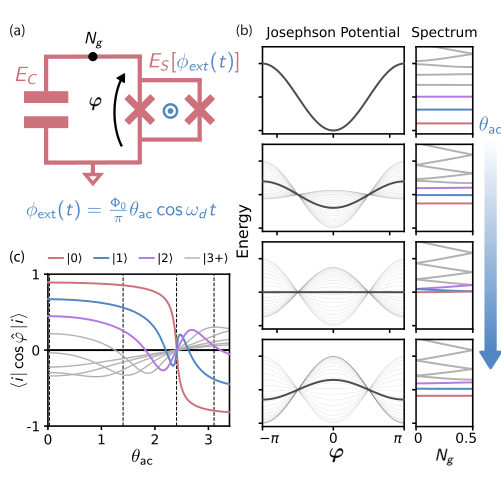
<figcaption class="paper-figure-caption"><b>Fig 1.</b> FIG. 1. Concept. (a) A transmon circuit with charging energy EC embedding a symmetric SQUID with Josephson energy ES[ϕext] is flux-driven at frequency ωd with a reduced amplitude θac. (b) Potential energy vs phase (left) and spec- trum vs offset charge (right) under increasing drive strength (top to bottom, amplitudes marked as vertical dashed lines in panel (c)). The thin potential lines are instantaneous pro- files plotted during one drive period, while the thick ones are time-averaged. The spectra are computed with the averaged potentials. (c) Diagonal matrix element of cos ˆφ for the eigen- states of Hamiltonian Eq. (1), averaged over offset charge, vs reduced drive strength.</figcaption>
</figure>
<figure class="paper-figure-card">
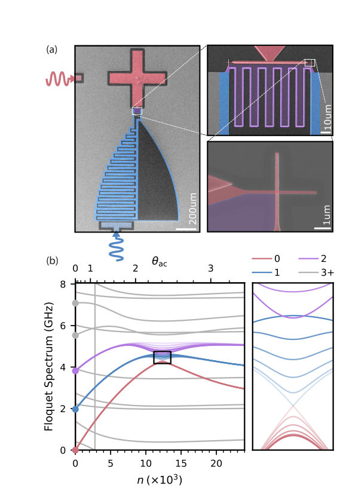
<figcaption class="paper-figure-caption"><b>Fig 2.</b> FIG. 2. Implementation. (a) False-colored SEM picture of the device, with the transmon island (EC/h = 103 MHz) and the SQUID junctions (EJ/2h = 2.6 GHz) in salmon, and the readout resonator in blue. Drive ports and input signals (wiggly arrows) have matching colors. A meander inductor (purple) forms the lower arm of the SQUID (area in light pur- ple). Insets: zoom on the SQUID coupler and one junction. (b) Bare eigenenergies (dots on y-axis) and Floquet spectrum (lines) of the transmon flux-driven at ωd/2π = 8.054 GHz vs resonator occupation. Levels 0 to 2 are plotted with varying offset charge from 0 to 0.5 (dark to light colors). Levels above 3 are plotted with Ng = 0.2. Inset: zoom on...</figcaption>
</figure>
<figure class="paper-figure-card">
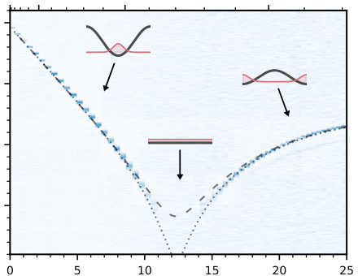
<figcaption class="paper-figure-caption"><b>Fig 3.</b> FIG. 3. Qubit spectroscopy through collapse and in- version. Frequency shift of the qubit transition measured by two-tone spectroscopy as a function of resonator occupation. The color represents the digitizer signal in arbitrary units. The black dashed and dotted lines are fits to the measured spectrum based on diagonalization of the Hamiltonian Eq. (1) for offset charges Ng = 0.0 and Ng = 0.5, respectively. Above, we indicate the renormalized Josephson potential profiles in black, and the corresponding ground-state wavefunctions in phase representation in salmon. The resonator occupation is calibrated from the fit. The top axis indicates the equivalent flux-drive amplitude θac.</figcaption>
</figure>
<figure class="paper-figure-card">
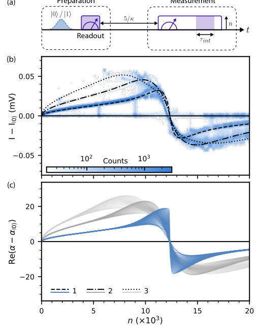
<figcaption class="paper-figure-caption"><b>Fig 4.</b> FIG. 4. Collapse and inversion revealed through read- out (a) Pulse sequence. An optional π pulse prepares the transmon in either the ground |0⟩or first excited |1⟩state, followed by a post-selection readout pulse. After an idling time of 5/κ, a long measurement pulse is applied. IQ distri- butions are acquired by integrating over an interval of length τint = 600 ns at the end of the pulse (shaded area), which en- sures a measurement of the steady-state resonator field only. We repeat this sequence for increasing measurement ampli- tude, which we convert into a resonator steady-state occu- pation n. (b) Measured histogram of the I quadrature for transmon prepared in |1⟩as a function of...</figcaption>
</figure>
</div>

<p><strong>Summary.</strong> The research investigates strongly driven superconducting transmon circuits to push operational limits. By engineering the circuit to suppress unwanted transitions, the authors observe that increasing drive power causes the Josephson potential to first collapse and then invert its sign. This inversion reveals a novel physical mechanism—dynamical stabilization analogous to an inverted pendulum—opening new avenues for quantum state control.</p>
<p><strong>Why it may be interesting.</strong> This work provides concrete experimental evidence of non-trivial dynamical phenomena (potential collapse/inversion) in superconducting circuits under strong driving, which has implications for designing robust quantum control protocols beyond simple resonance avoidance.</p>
<details>
<summary>Detailed structure</summary>
<p><strong>Main problem.</strong> The primary challenge is overcoming dynamic range limitations in strongly driven superconducting circuits caused by unwanted transitions, which obscures fundamental physics.</p>
<p><strong>Main result.</strong> The authors experimentally demonstrate the collapse of the Josephson potential to zero, followed by a clear sign inversion as drive power increases. This inversion dynamically stabilizes the transmon at its unstable equilibrium point, analogous to an inverted pendulum.</p>
<p><strong>Method.</strong> The study employs spectroscopy and readout experiments on a carefully engineered transmon-resonator system to track the time evolution of the Josephson potential under increasing microwave drive power.</p>
<p><strong>Model / system.</strong> The physical platform is a transmon-resonator circuit embedding a symmetric SQUID, described by a Hamiltonian involving Josephson energy modulated by an external flux drive. The engineering minimizes spurious modes via native cosine-cosine coupling.</p>
<p><strong>Key observables.</strong> Time evolution of the Josephson potential (collapse and inversion), qubit frequency shifts ($\chi_i(n)$), and the measured sign reversal of $\langle \cos \hat{\varphi} 
angle$ during readout.</p>
<p><strong>Important parameters / regimes.</strong> Drive power ($P$) leading to specific photon numbers ($n$), operating in regimes where $\omega_a/\omega_{01} \gg 1$, and the critical point around $12.5 	imes 10^3$ photons.</p>
<p><strong>Assumptions / limitations.</strong> The interpretation relies on fitting nonlinear qubit frequency shifts to a renormalized Hamiltonian, with final confirmation of inversion coming from direct measurement of $\langle \cos \hat{\varphi} 
angle$.</p>
<p><strong>Figures summary.</strong> Figures illustrate the transmon circuit concept and potential energy vs. phase; subsequent figures detail the three spectroscopic regimes (flattening, collapse, revival) showing the clear sign reversal in the readout signal.</p>
<p><strong>Paper structure.</strong> The paper progresses from establishing the physical system and overcoming spurious mode limitations to performing spectroscopy that reveals potential renormalization, culminating in a direct readout measurement confirming the potential's inversion.</p>
</details>
<details>
<summary>Abstract</summary>
<p>Superconducting circuits embedding Josephson junctions leverage microwave drives for control and measurement of quantum states. Although increasing the drive power is desirable for improving the efficiency of these operations, it eventually triggers unwanted transitions to uncontrolled states. While careful choice of circuit symmetries and parameters can mitigate these effects, the presence of spurious circuit modes spoils the resilience to high power. In this work, we engineer a transmon-resonator system free of any detrimental unwanted transitions. This resilience enables us to access drive powers at which we uncover a remarkable physical phenomenon: the collapse and inversion of the Josephson potential. Through spectroscopy and readout experiments, we confirm that the driven potential goes to zero and inverts as the power increases. The inversion corresponds to the dynamical stabilization of the transmon at its unstable equilibrium point, directly analogous to an inverted pendulum. This result reveals a new limitation of strongly driven superconducting circuits beyond drive-induced transitions. In addition, the dynamical renormalization of the Josephson potential opens up novel avenues for the control of superconducting circuits, and the autonomous stabilization of noise-resilient quantum states.</p>
</details>
<p><sub><a href="#top">↑ back to top</a></sub></p>

<p><a id="paper-2607.14212"></a></p>
<h3 id="benchmarking-quantum-simulation-at-scale"><a href="http://arxiv.org/abs/2607.14212v1">Benchmarking quantum simulation at scale</a></h3>
<p><strong>Authors:</strong> Jeremy Hartse, Mohsin Raza, Shravan Shravan, Ivan H. Deutsch, Niklas Mueller<br>
<strong>Type:</strong> theory · <strong>Category:</strong> quantum information and computing · <strong>PDF:</strong> <a href="https://arxiv.org/pdf/2607.14212v1">https://arxiv.org/pdf/2607.14212v1</a><br>
<strong>Analysis basis:</strong> full PDF text, analyzed in chunks
<strong>Topic relevance:</strong> 🔥 <code>scars &amp; prethermalization</code> <strong>4/5</strong> · <code>non-equilibrium dynamics</code> <strong>3/5</strong> · <code>entanglement &amp; information structure</code> <strong>2/5</strong> · <code>non-equilibrium universality</code> <strong>2/5</strong> · <code>Keldysh / 2PI / non-Gaussian methods</code> <strong>1/5</strong> · <code>analog quantum simulation</code> <strong>1/5</strong> · <code>driven-dissipative phase transition</code> <strong>1/5</strong> · <code>methods for driven-dissipative</code> <strong>1/5</strong></p>
<div class="figure-strip-hint">↔ Scroll figures horizontally</div>
<div class="paper-figures-scroll">
<figure class="paper-figure-card">
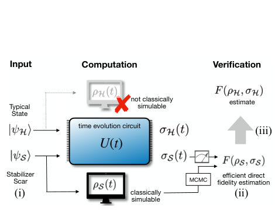
<figcaption class="paper-figure-caption"><b>Fig 1.</b> FIG. 1. Benchmarking Quantum Simulations at Scale. A pro- tocol for benchmarking the fidelity of quantum simulations of non-equilibrium dynamics in regimes beyond classical simula- bility. We consider models which are non-integrable, for which typical states, |ψH⟩, thermalize. Such dynamics are not effi- ciently classically simulable, and benchmarking performance for such states is intractable. For models that host stabilizer scars, under consideration here, we can exploit the fact that for initial states in this subspace, |ψS⟩dynamics are classi- cally simulable and we can perform direct fidelity estimation efficiently. Assuming local depolarizing noise, we demonstrate for a specific...</figcaption>
</figure>
<figure class="paper-figure-card">
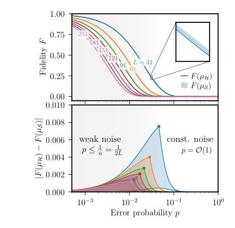
<figcaption class="paper-figure-caption"><b>Fig 2.</b> FIG. 2. Noise acting on scar vs. non-scar states. Compar- ison between the fidelity under a local depolarizing channel, averaged over Haar-random input from the full Hilbert space, F(µH) (solid lines), and bounds of the respective fidelity for scar states F(µS) (shaded bands, Eq. (15) and SM S3). The difference, shown in the lower panel, vanishes as n →∞or for small p, and (trivially) for p →1. The tighter bound is shown, and the crossover between where Eq. (15) is tighter and where the SM result applies is marked by square markers.</figcaption>
</figure>
<figure class="paper-figure-card">
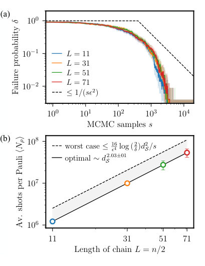
<figcaption class="paper-figure-caption"><b>Fig 3.</b> FIG. 3. Numerical MCMC demonstration. (a) Failure prob- ability to reach precision ϵ = 5 · 10−2 of MCMC-based DFE between a target ρ ∈S and a reference state σ ∈S as a function of the number of sampled Pauli operators with exact measurements. Results shown for L = 11, 31, 51, 71 (n = 22, 62, 102, 142 qubits) compared with the bound s = ⌈1/(ϵ2δ)⌉[69] are independent of system size when expecta- tion values are known exactly. (b) Finite-shot estimation. For ρ ∈S, we show the maximal shot number ⟨Nρ⟩(dashed black) versus the optimal shot cost (points; solid black fit), attain- able if exact expectation values were known (see SM S4) for precision ϵ = 5 · 10−2 and failure probability δ = 1 ·...</figcaption>
</figure>
<figure class="paper-figure-card">
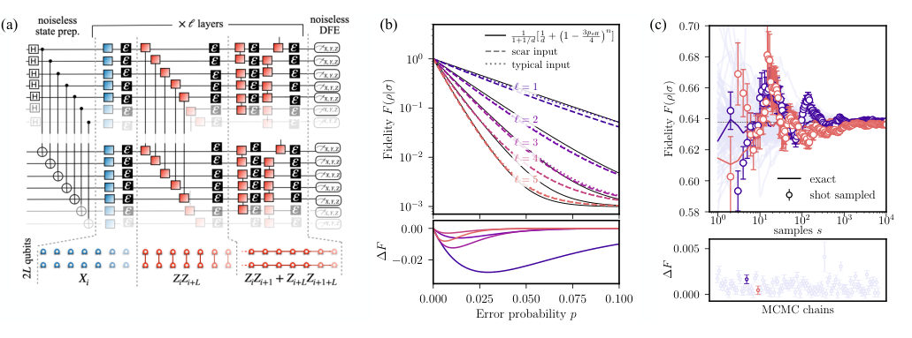
<figcaption class="paper-figure-caption"><b>Fig 4.</b> FIG. 4. Circuit Simulation. (a) Quantum circuit used to simulate Eq. (11), consisting of state preparation, (random or Trotterized) time evolution, and DFE. Local depolarizing noise is assumed, except during state preparation and measurement. The state preparation circuit consists of L = n/2 two-qubit Bell-pair sub-circuits and is applied to an input computational basis product state |s⟩, where s is an n-qubit bitstring. For special s, the circuit prepares QMBS basis states, while for all others it produces orthogonal non-scar states. (b) Classical emulation of the circuit in (a) for n = 10 qubits comparing fidelities as a function of p for different circuit depths ℓ, comparing scar basis...</figcaption>
</figure>
</div>

<p><strong>Summary.</strong> This paper introduces a novel benchmarking protocol for non-equilibrium quantum simulation using 'quantum many-body scars.' By restricting the simulation fidelity measurement to a special, classically simulable subspace, the authors create a quantifiable benchmark. This allows researchers to test if quantum hardware can simulate dynamics that are intractable for classical computers.</p>
<p><strong>Why it may be interesting.</strong> It provides a concrete, mathematically rigorous framework for testing quantum advantage in dynamics by isolating measurable quantities (fidelity) that are sensitive to computational hardness.</p>
<details>
<summary>Detailed structure</summary>
<p><strong>Main problem.</strong> The authors propose a scalable verification scheme for non-equilibrium quantum simulation to benchmark performance beyond classical computational limits.</p>
<p><strong>Main result.</strong> They show that fidelity estimation within the specialized 'scar subspace' provides a quantifiable benchmark against the full Hilbert space, even under local depolarizing noise.</p>
<p><strong>Method.</strong> The protocol uses Direct Fidelity Estimation (DFE) applied to states confined to a quantum many-body scar subspace, leveraging stabilizer properties for efficient measurement scaling.</p>
<p><strong>Model / system.</strong> The study utilizes an Ising model on $n=2L$ qubits with periodic boundary conditions. The key feature is the existence of a polynomially large 'scar subspace' embedded in the exponentially large Hilbert space.</p>
<p><strong>Key observables.</strong> Fidelity ($F$), Stabilizer Rényi entropy ($\mathcal{M}_\alpha$), and expectation values of Pauli observables ($ ext{Tr}[
ho W_k]$).</p>
<p><strong>Important parameters / regimes.</strong> Local depolarizing noise strength ($p$), system size ($L$ or $n$), and required measurement precision ($\epsilon, \delta$).</p>
<p><strong>Assumptions / limitations.</strong> The dominant error is approximated by local depolarizing noise, and the method relies on the existence of a polynomially large scar subspace.</p>
<p><strong>Figures summary.</strong> Figures compare fidelities in the full vs. scar subspaces under noise (Fig 2), demonstrate MCMC estimation accuracy independent of system size (Fig 3a), and show how shot counts affect statistical uncertainty estimates (Fig S4).</p>
<p><strong>Paper structure.</strong> The paper develops a three-part benchmarking protocol: defining the QMBS, showing DFE efficiency via stabilizer entropy bounds, and deriving quantitative relationships between scar and full-space fidelities under noise.</p>
</details>
<details>
<summary>Abstract</summary>
<p>The applications for which quantum computers will clearly outperform classical computers are still being identified and benchmarking such an advantage is challenging. We propose a scalable verification scheme for non-equilibrium quantum simulation based on stabilizer scars, a special class of quantum many-body scars, whose structure ensures both classical simulability and efficient direct fidelity estimation. Assuming a physically motivated error model, we show that the fidelity of quantum simulating these states bounds the fidelity of classically intractable simulations, providing a benchmark for quantum-advantage experiments in non-equilibrium dynamics.</p>
</details>
<p><sub><a href="#top">↑ back to top</a></sub></p>

<p><a id="paper-2607.14501"></a></p>
<h3 id="geometric-mode-steering-of-the-quantum-mpemba-effect"><a href="http://arxiv.org/abs/2607.14501v1">Geometric Mode Steering of the Quantum Mpemba Effect</a></h3>
<p><strong>Authors:</strong> Yingying Hong, Longxing Xu, Weiwei Zhang, Jie Ren, Jianhui Wang<br>
<strong>Type:</strong> theory · <strong>Category:</strong> other · <strong>PDF:</strong> <a href="https://arxiv.org/pdf/2607.14501v1">https://arxiv.org/pdf/2607.14501v1</a><br>
<strong>Analysis basis:</strong> full PDF text, analyzed in chunks
<strong>Topic relevance:</strong> 🔥 <code>quantum measurements</code> <strong>4/5</strong> · <code>measurement-induced transitions</code> <strong>3/5</strong> · <code>methods for driven-dissipative</code> <strong>3/5</strong> · <code>non-equilibrium dynamics</code> <strong>2/5</strong> · <code>correlated / nonlocal dissipation</code> <strong>1/5</strong> · <code>driven-dissipative phase transition</code> <strong>1/5</strong> · <code>non-equilibrium universality</code> <strong>1/5</strong></p>
<div class="figure-strip-hint">↔ Scroll figures horizontally</div>
<div class="paper-figures-scroll">
<figure class="paper-figure-card">
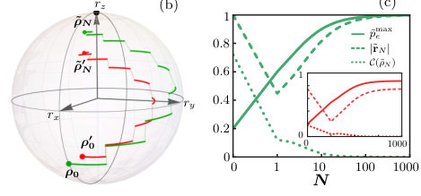
<figcaption class="paper-figure-caption"><b>Fig 1.</b> FIG. 1. (a) Geometric mode-steering protocol. The se- quence of N + 1 unitary segments and N nonselective mea- surements maps r 7→RtotTNr, preparing a nearly diago- nal ˜ρN with enhanced target population. (b) Bloch tra- jectories for N = 8 measurements, steering the pure ρ0 (|r0| = 1, θ = arccos(−0.8), ϕ = 0) and mixed ρ′ 0 (|r′ 0| = 0.75, θ = arccos(−0.8), ϕ = 0) initial states to ˜ρN and ˜ρ′ N, respectively. Solid arcs: unitaries; dotted chords: measure- ment projections. (c) Optimal population ˜p max e , Bloch length |˜rN|, and coherence C(˜ρN) versus N; inset: mixed input. The solid curve is bounded by (1 + |r0|)/2. Parameters: T = 0.1, Ω= 0.1, ∆= 2.0.</figcaption>
</figure>
<figure class="paper-figure-card">
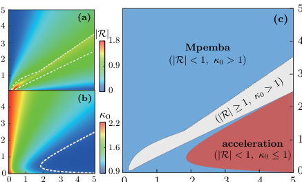
<figcaption class="paper-figure-caption"><b>Fig 2.</b> FIG. 2. Parameter-induced acceleration of relaxation. (a) Slow-mode amplitude ratio |R|. (b) Initial distance ratio κ0. (c) Trace-distance acceleration factor. The blue region |R| &lt; 1, κ0 &gt; 1 is the Mpemba regime. Parameters: |r0| = 1, θ = arccos(−0.6), ϕ = 0, T = 0.1, γ = 1.0, N = 100. Contours use the modulus condition |a+1| &lt; |a+X|, valid for real and complex λ2 [48].</figcaption>
</figure>
<figure class="paper-figure-card">
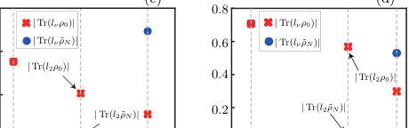
<figcaption class="paper-figure-caption"><b>Fig 3.</b> FIG. 3. Quantum Mpemba effect in a driven dissipative qubit with complex (a,c) and real (b,d) spectral gaps. (a,b) Trace distance to ρss for ρ0 (red) and ˜ρN (blue); insets: spectrum of L. (c,d) Modal weights |Tr(lνρ)| versus |Re(λν)|. The preparation suppresses the slowest modal weights, including both members of the complex-conjugate pair in (c). Other parameters as in Fig. 2. Since Tγ ≪1, the crossing persists when the preparation time is included in the total time.</figcaption>
</figure>
<figure class="paper-figure-card">
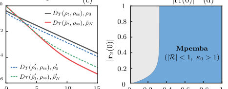
<figcaption class="paper-figure-caption"><b>Fig 4.</b> FIG. 4. Trace-distance dynamics and Mpemba regions for M = 6: beyond-Davies (a,b) and zero-temperature Davies- type (c,d) cases. In (a,c), solid and dashed curves corre- spond to two product initial states, differing only in the first qubit, and to their prepared states. In (b,d), blue de- notes |R| &lt; 1 and κ0 &gt; 1. Parameters: (|r1(0)|, θ1, ϕ1) = (1, arccos(−0.6), 0) and (0.75, arccos(−0.8), 0), Ω= 1.2, J = 0.5, N = 100; beyond Davies: (γ1 = 1, γj&gt;1 = 1.2, Ωd = 0.1); Davies-type: (γj = 1 ∀j, Ωd = 0).</figcaption>
</figure>
</div>

<p><strong>Summary.</strong> The paper introduces a novel pre-dissipative geometric mode-steering protocol to accelerate the relaxation of open quantum systems toward equilibrium. By strategically interleaving coherent rotations with nonselective measurements, the protocol suppresses coupling to slow Liouvillian modes. This suppression enables the realization of the quantum Mpemba effect in various qubit platforms.</p>
<p><strong>Why it may be interesting.</strong> This work provides a concrete, experimentally implementable quantum control scheme (measurement-based) to overcome fundamental relaxation bottlenecks in open systems, which is highly relevant for quantum computing hardware characterization and optimization.</p>
<details>
<summary>Detailed structure</summary>
<p><strong>Main problem.</strong> The research addresses how open quantum systems approach their steady state, specifically aiming to realize the quantum Mpemba effect where a state farther from equilibrium relaxes faster.</p>
<p><strong>Main result.</strong> A pre-dissipative geometric mode-steering protocol was developed that suppresses overlap with slow Liouvillian modes, enabling accelerated relaxation dynamics in driven qubit and multiqubit systems.</p>
<p><strong>Method.</strong> The core method involves interleaving coherent unitary evolution segments with nonselective projective measurements to geometrically steer the state's Bloch direction along geodesic paths before dissipation begins.</p>
<p><strong>Model / system.</strong> The system is modeled as an open quantum system governed by a Lindblad master equation, analyzed using generalized Bloch representations for qubit and multiqubit systems. The dynamics are characterized by Liouvillian operators and spectral gaps.</p>
<p><strong>Key observables.</strong> Slow-mode Overlap Ratio ($R$), initial distance to stationarity ($\kappa_0$), trace distance $D_T(
ho_t, 
ho_{ss})$, and the final excited-state population $    ilde{p}_e$.</p>
<p><strong>Important parameters / regimes.</strong> The Mpemba regime requires two conditions: reduced slow-mode overlap ($|R|<1$) and a larger initial distance to stationarity ($\kappa_0 > 1$). The analysis covers both real and complex spectral gaps.</p>
<p><strong>Assumptions / limitations.</strong> The protocol is distinct from Zeno protocols as measurements are preparatory. The framework treats real and complex spectral gaps uniformly, though some derivations rely on approximations for the moderately driven regime.</p>
<p><strong>Figures summary.</strong> Figures illustrate the geometric steering sequence (Fig. 1a), Bloch trajectories (Fig. 1b), parameter dependence of the Mpemba regime in $(\Omega, \Delta)$ planes (Fig. S2), and time evolution of relaxation dynamics showing slow mode suppression (Fig. 3).</p>
<p><strong>Paper structure.</strong> The paper introduces the problem using the Lindblad master equation, details the pre-dissipative geometric steering protocol involving unitary steps and measurements, derives the necessary conditions ($|R|<1$ and $\kappa_0>1$), and demonstrates robust Mpemba acceleration across various qubit architectures.</p>
</details>
<details>
<summary>Abstract</summary>
<p>The slowest Liouvillian mode often bottlenecks the relaxation of an open quantum system to its steady state. Standard strategies circumvent this bottleneck by selecting special initial states or engineering the dissipator. Here we show that neither is necessary. We introduce a pre-dissipative geometric steering protocol that reshapes any given pure or mixed state before relaxation begins -- coherent rotations interleaved with nonselective projective measurements -- at fixed Lindblad generator. By steering the state's Bloch direction along geodesic paths, the protocol suppresses its overlap with the slowest Liouvillian modes. The prepared state then starts farther from equilibrium yet relaxes faster, realizing the quantum Mpemba effect, whenever two computable conditions hold: reduced slow-mode overlap and a larger initial distance to stationarity. Our framework treats real and complex spectral gaps uniformly, and we demonstrate robust Mpemba acceleration in driven qubit and multiqubit systems using operations available in trapped-ion and superconducting platforms.</p>
</details>
<p><sub><a href="#top">↑ back to top</a></sub></p>

<p><a id="paper-2607.14977"></a></p>
<h3 id="parallel-analog-quantum-simulation-in-homogeneous-quantum-gases"><a href="http://arxiv.org/abs/2607.14977v1">Parallel analog quantum simulation in homogeneous quantum gases</a></h3>
<p><strong>Authors:</strong> Diego Hernández Rajkov, Alberto Terenzi, Marcia Frómeta Fernández, Nicola Grani, Massimo Inguscio, Giulia Del Pace, Giacomo Roati<br>
<strong>Type:</strong> experiment · <strong>Category:</strong> quantum gases · <strong>PDF:</strong> <a href="https://arxiv.org/pdf/2607.14977v1">https://arxiv.org/pdf/2607.14977v1</a><br>
<strong>Analysis basis:</strong> full PDF text, analyzed in chunks
<strong>Topic relevance:</strong> 🔥 <code>analog quantum simulation</code> <strong>4/5</strong> · <code>non-equilibrium dynamics</code> <strong>3/5</strong> · <code>non-equilibrium universality</code> <strong>2/5</strong> · <code>correlated / nonlocal dissipation</code> <strong>1/5</strong> · <code>driven-dissipative phase transition</code> <strong>1/5</strong> · <code>entanglement &amp; information structure</code> <strong>1/5</strong> · <code>exotic spin models in light-matter</code> <strong>1/5</strong></p>
<div class="figure-strip-hint">↔ Scroll figures horizontally</div>
<div class="paper-figures-scroll">
<figure class="paper-figure-card">
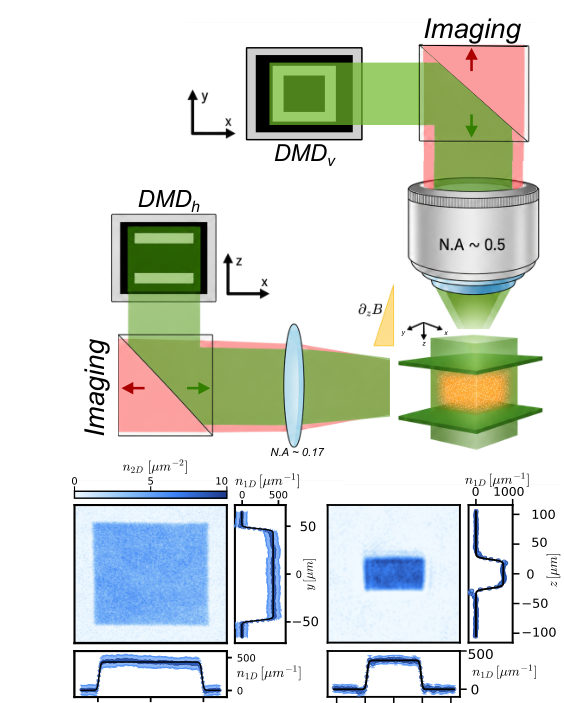
<figcaption class="paper-figure-caption"><b>Fig 1.</b> FIG. 1. Experimental setup for production of ho- mogeneous Fermi gases. The atomic gas is con- fined by optically repulsive potentials generated with two DMDs, projected along the vertical (DMDv) and horizontal (DMDh) directions, which also define our imaging axes. A magnetic-field gradient levitates the gas, compensating grav- ity for both hyperfine states. Bottom panels: representative column-density images of a homogeneous gas at unitarity, ac- quired along both imaging axes, for a system of dimensions 100(x) × 100(y) × 50(z) µm3. Side panels show the integrated 1D profiles along each axis, black curve correspond to the ideal homogeneous profile.</figcaption>
</figure>
<figure class="paper-figure-card">
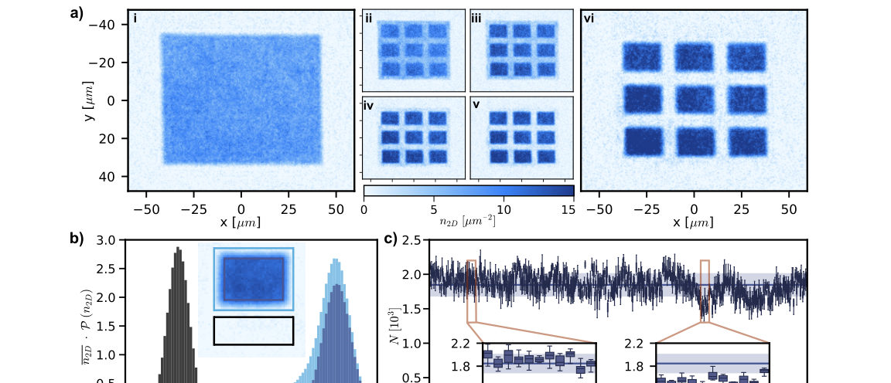
<figcaption class="paper-figure-caption"><b>Fig 2.</b> FIG. 2. Similarity analysis of QSU arrays for unitary Fermi gases. a) Procedure for multiplexing continuum systems, starting from an initial system of size 70(x) × 85(y) × 20(z) µm3. Representative in situ images are shown at t = 0 (i), 12 (ii), 24 (iii), 36 (iv), 48 (v), and 100 (vi) ms. The initial system is partitioned into smaller rectangular QSUs following the procedure described in the main text. Images are averaged over 5 experimental repetitions. b) Measured probability density P(n2D) of the column-integrated density n2D, where n2D denotes the average bulk density. Histogram colors indicate the regions from which n2D is sampled. c) Box plot showing the minimum, quartiles, and...</figcaption>
</figure>
<figure class="paper-figure-card">
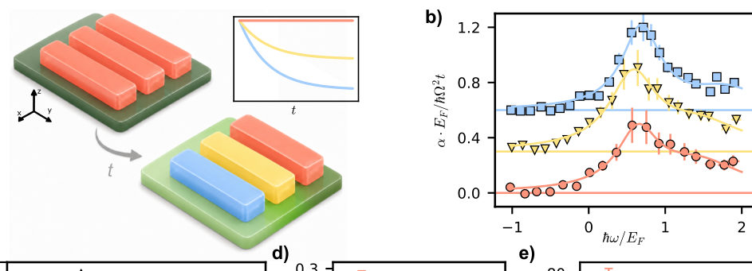
<figcaption class="paper-figure-caption"><b>Fig 3.</b> FIG. 3. Control of local temperature and degeneracy of Fermi gases at unitarity. a) Local evaporative cooling implemented by dynamically engineering the DMDh pattern intensity over time. b) Measured RF response for each QSU, obtained using a t = 4 ms pulse. Here, ω = 0 corresponds to the bare atomic transition. The continuous lines are a guide to the eye. c) Full width at half maximum Γ as a function of the peak position ¯hωp of the spectral response. Calibration data from Ref. [26] are shown as open symbols. d) Extracted T/TF obtained following the RF thermometry protocols of Refs. [26–28]. The gray band indicates the expected critical temperature for superfluidity, Tc = 0.16(1) TF . e)...</figcaption>
</figure>
<figure class="paper-figure-card">
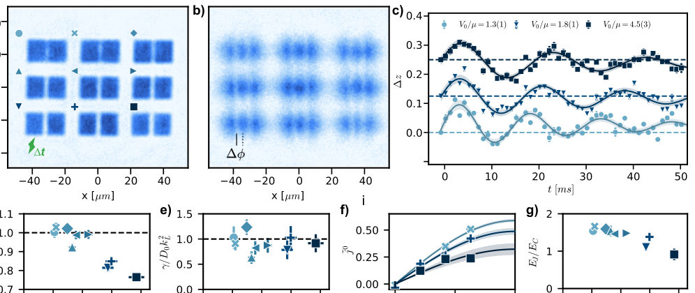
<figcaption class="paper-figure-caption"><b>Fig 4.</b> FIG. 4. Parallel probing of the weak-link to tunneling crossover. Experimental realization of nine independent QSUs implementing atomic Josephson junctions in the molecular BEC regime. a) In situ and b) time-of-flight images after 2 ms of expansion. Both panels show averages over 5 experimental repetitions. Each QSU implements a different tunneling barrier, with height V0/µ ranging from 1 to 4 specified by the symbols. c) Time evolution of the imbalance ∆z after imprinting an initial phase difference ϕ0 = 0.4π, shown for selected values of V0/µ. Measurements are fitted with the damped-oscillation</figcaption>
</figure>
</div>

<p><strong>Summary.</strong> The research demonstrates an advanced technique to create multiple, independently controllable quantum simulation units (QSUs) using ultracold atomic gases. This multiplexed setup allows researchers to simultaneously study complex phenomena like the superfluid transition and Josephson junction dynamics across an array of junctions. It establishes a powerful tool for investigating transport physics in strongly correlated matter.</p>
<p><strong>Why it may be interesting.</strong> This work provides a highly versatile, scalable experimental platform for studying non-equilibrium dynamics in strongly correlated quantum matter, directly addressing fundamental questions about transport and phase transitions in mesoscopic arrays.</p>
<details>
<summary>Detailed structure</summary>
<p><strong>Main problem.</strong> To study strongly correlated quantum systems, particularly dynamics and transport Hamiltonians, beyond classical computational reach.</p>
<p><strong>Main result.</strong> The authors successfully demonstrated parallel analog quantum simulation in two settings: characterizing the superfluid transition across multiple units and simulating Josephson junctions with independent control over local parameters.</p>
<p><strong>Method.</strong> They utilized a multiplexed configuration of ultracold atomic gases confined in configurable optical box potentials, allowing for independent manipulation of multiple quantum simulation units (QSUs).</p>
<p><strong>Model / system.</strong> The platform uses homogeneous quantum gases (e.g., Fermi gas) to simulate models like the unitary Fermi gas and Josephson junctions. Control is achieved by shaping optical traps and controlling local cooling/phase.</p>
<p><strong>Key observables.</strong> Density, Temperature ($T$), Superfluid fractions, population imbalance ($\Delta z$), and relative phase ($\Delta\phi$) measured via in situ imaging and time-of-flight interference.</p>
<p><strong>Important parameters / regimes.</strong> Tunneling strength ($E_J$), charging energy ($E_C$), local temperature ($T/T_F$), and barrier height ($V_0/\mu$).</p>
<p><strong>Assumptions / limitations.</strong> The process assumes quasi-adiabatic evolution during trap reshaping, and the RF thermometry method supports the assumption of local thermal equilibrium.</p>
<p><strong>Figures summary.</strong> Figures illustrate the experimental setup using DMDs for confinement, show density distribution verification across multiple units (multiplexing), detail local temperature control via RF spectroscopy, and map out Josephson junction dynamics showing frequency/damping evolution with barrier height.</p>
<p><strong>Paper structure.</strong> The paper progresses by first establishing the multiplexed QSU architecture, then demonstrating independent local control over temperature and superfluidity. Subsequently, it applies this framework to simulate coupled Josephson junctions, analyzing the crossover between weak-link and tunneling regimes.</p>
</details>
<details>
<summary>Abstract</summary>
<p>Analog quantum simulation offers a powerful way to study strongly correlated quantum systems that are beyond the reach of classical computation. In this context, ultracold atomic gases have been demonstrated to be an exceptionally versatile and well-controlled platform for implementing various quantum Hamiltonians. In this work, we extend this level of control to a multiplexed configuration in which distinct quantum-simulation units are independently controlled and engineered starting from a single atomic cloud. We demonstrate multiplexed operation in two representative settings. First, by shaping box-trap potentials and separately controlling the evaporative cooling trajectories, we prepare subsystems at various temperatures across the superfluid transition of the unitary Fermi gas. Second, we demonstrate parallel quantum simulation of the Josephson Hamiltonian across distinct Josephson-junction quantum simulation units with individually tunable parameters, including local phase control to initialize the dynamics. Our scheme provides a versatile route toward systematic studies of dynamics and transport Hamiltonians in strongly correlated ultracold matter. Moreover, it is readily extendable to a wide range of atomic species, geometries, and dimensionalities.</p>
</details>
<p><sub><a href="#top">↑ back to top</a></sub></p>

<p><a id="paper-2607.14260"></a></p>
<h3 id="emulation-of-entanglement-distribution-networks-on-a-quantum-computer"><a href="http://arxiv.org/abs/2607.14260v1">Emulation of Entanglement Distribution Networks on a Quantum Computer</a></h3>
<p><strong>Authors:</strong> Ashley N. Tittelbaugh, Jerry Horgan, Rohan Bali, Marco Ruffini, Daniel C. Kilper, Shelbi L. Jenkins, Boulat A. Bash<br>
<strong>Type:</strong> both · <strong>Category:</strong> quantum information and computing · <strong>PDF:</strong> <a href="https://arxiv.org/pdf/2607.14260v1">https://arxiv.org/pdf/2607.14260v1</a><br>
<strong>Analysis basis:</strong> full PDF text, analyzed in chunks
<strong>Topic relevance:</strong> 🔥 <code>QC/QI experiment</code> <strong>4/5</strong> · <code>entanglement &amp; information structure</code> <strong>3/5</strong> · <code>correlated / nonlocal dissipation</code> <strong>2/5</strong> · <code>driven-dissipative phase transition</code> <strong>1/5</strong> · <code>methods for driven-dissipative</code> <strong>1/5</strong> · <code>non-equilibrium dynamics</code> <strong>1/5</strong></p>
<div class="figure-strip-hint">↔ Scroll figures horizontally</div>
<div class="paper-figures-scroll">
<figure class="paper-figure-card">
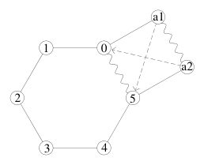
<figcaption class="paper-figure-caption"><b>Fig 1.</b> Fig. 1: Ring graph state; edge (0,5) is realized via a teleported virtual CZ using a cut Bell pair (Fig. 2).</figcaption>
</figure>
<figure class="paper-figure-card">
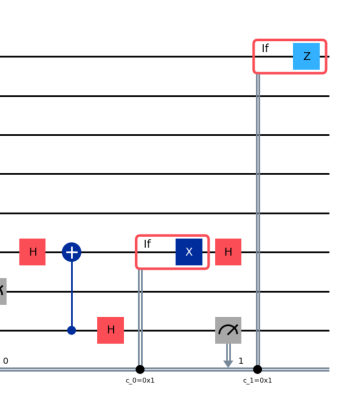
<figcaption class="paper-figure-caption"><b>Fig 2.</b> Fig. 2: Cut graph-state circuit The base form of the cut graph state circuit runs in all experiments.</figcaption>
</figure>
<figure class="paper-figure-card">

<figcaption class="paper-figure-caption"><b>Fig 3.</b> Fig. 3: Simulation at 99.6% ZALM fidelity and 10ns classical communi- cation Individual graph state stabilizer values and a lower-bound for pair-wise graph state fidelities. For both stabilizers and fidelity, a unity value indicates perfect entanglement with no errors.</figcaption>
</figure>
<figure class="paper-figure-card">

<figcaption class="paper-figure-caption"><b>Fig 4.</b> Fig. 3b further illustrates that the lower-bounded fidelity across the cut edge (0,5) is the smallest, while the lower-bounded fidelities of neighboring edges (0,1) and (4,5) exhibit more moderate degradation. This behavior is again consistent with the results of Carrera Vazquez et al. [4]. Mirroring the stabilizer behavior, edge (0,1) exhibits a lower fidelity than its counterpart edge (4,5), which we similarly attribute to the directionality of the cz operation. Depolarization differences are most pronounced near the cut edge, where uni- tary depolarization performs notably worse due to its additional gate overhead. QPD and Pauli perform close to ideal, with Pauli slightly lower due to...</figcaption>
</figure>
<figure class="paper-figure-card">
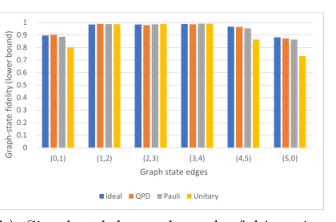
<figcaption class="paper-figure-caption"><b>Fig 5.</b> Fig. 4 presents the hardware results for the output stabilizers and lower-bounded fidelities when the depolarized runs are configured to emulate a 99.6% ZALM- generated fidelity. The error bars indicate shot-based statistical uncertainty. We</figcaption>
</figure>
</div>

<p><strong>Summary.</strong> This paper models entanglement distribution across simulated and real quantum networks to build multipartite graph states. It rigorously tests the impact of noise sources, including depolarizing channels and classical communication delays, on network fidelity. The work is important because it demonstrates that hardware implementation details can drastically alter expected performance compared to idealized theoretical models.</p>
<p><strong>Why it may be interesting.</strong> It provides concrete benchmarks for resource estimation in distributed quantum computing architectures, which is crucial for theorists designing fault-tolerant protocols that must account for realistic physical constraints.</p>
<details>
<summary>Detailed structure</summary>
<p><strong>Main problem.</strong> The study investigates how quantum computers can emulate complex quantum networks and assess their performance when subjected to practical noise sources like degraded entanglement and communication latency.</p>
<p><strong>Main result.</strong> Hardware constraints lead to profound differences in results compared to simulations, highlighting that the choice of error model (e.g., QPD vs. Pauli) significantly impacts achievable network fidelity.</p>
<p><strong>Method.</strong> The authors modeled imperfect Bell-pair sources using depolarizing noise and classical delays by implementing various depolarization channels (Stinespring dilation, random Pauli errors, QPD).</p>
<p><strong>Model / system.</strong> The system involves emulating entanglement distribution networks to construct multipartite graph states, tested on superconducting quantum hardware (IQM Emerald) and in simulation.</p>
<p><strong>Key observables.</strong> Bipartite-entanglement fidelity, stabilizer expectations for the resulting graph state, and the required network-distributed entanglement fidelity ($\ge 90\%$).</p>
<p><strong>Important parameters / regimes.</strong> Classical communication delay (tested up to 10 ns and conceptually up to tens of kilometers); initial ZALM source fidelity (e.g., 99.6%).</p>
<p><strong>Assumptions / limitations.</strong> The study assumes mathematical equivalence between noise models but finds hardware implementation introduces discrepancies; rate investigation is left for future work.</p>
<p><strong>Figures summary.</strong> Figures illustrate the ring graph state structure and circuit, compare stabilizer values across different depolarization channels (simulation vs. hardware), show fidelity sweeps versus network-distributed entanglement, and map fidelity loss against classical delay.</p>
<p><strong>Paper structure.</strong> The paper progresses by defining the problem of noisy quantum networking, detailing multiple noise models for Bell pairs, presenting comparative results on graph state construction fidelity under these noises, and finally discussing the implications of hardware vs. simulation discrepancies.</p>
</details>
<details>
<summary>Abstract</summary>
<p>We investigate how quantum computers can be used to emulate quantum networks and study their performance under practical impairments. In particular, we evaluate how degraded entanglement and communication latency affect teleportation-based distributed multipartite-entanglement-state construction. We model imperfect Bell-pair sources using depolarizing noise channels and classical communication delays using thermal relaxation. We implement the depolarization using Stinespring dilation, randomly applied Pauli errors, and quasi-probability decompositions, evaluating the latter two on IQM quantum hardware and all three in simulation. We then study the performance of the entanglement distribution under noise generated by the aforementioned models. Although these noise models are mathematically equivalent, we find that hardware constraints result in profound differences in the corresponding results, highlighting the importance of careful experiment design.</p>
</details>
<p><sub><a href="#top">↑ back to top</a></sub></p>

<p><a id="paper-2607.14319"></a></p>
<h3 id="towards-a-monolithic-platform-for-coupling-superconducting-circuits-to-low-loss-microwave-phonons-in-alscn-on-4h-sic"><a href="http://arxiv.org/abs/2607.14319v1">Towards a monolithic platform for coupling superconducting circuits to low-loss microwave phonons in AlScN on 4H-SiC</a></h3>
<p><strong>Authors:</strong> Yuanchen Deng, William W. Roberts, Sueli Skinner-Ramos, Dalton Anderson, Katherine Hewey, Xingyu Du, Michael Miller, Brandon Smith, Hwijong Lee, Pingping Chen, Charles Thomas Harris, Roy H. Olsson, Lisa Hackett, Rupert Lewis, Matt Eichenfield<br>
<strong>Type:</strong> experiment · <strong>Category:</strong> quantum information and computing · <strong>PDF:</strong> <a href="https://arxiv.org/pdf/2607.14319v1">https://arxiv.org/pdf/2607.14319v1</a><br>
<strong>Analysis basis:</strong> full PDF text, analyzed in chunks
<strong>Topic relevance:</strong> 🔥 <code>QC/QI experiment</code> <strong>4/5</strong> · <code>quantum optics experiment</code> <strong>2/5</strong> · <code>spintronics-quantum-optics interface</code> <strong>2/5</strong> · <code>analog quantum simulation</code> <strong>1/5</strong> · <code>correlated / nonlocal dissipation</code> <strong>1/5</strong> · <code>correlated cavity matter</code> <strong>1/5</strong> · <code>driven-dissipative phase transition</code> <strong>1/5</strong></p>
<div class="figure-strip-hint">↔ Scroll figures horizontally</div>
<div class="paper-figures-scroll">
<figure class="paper-figure-card">
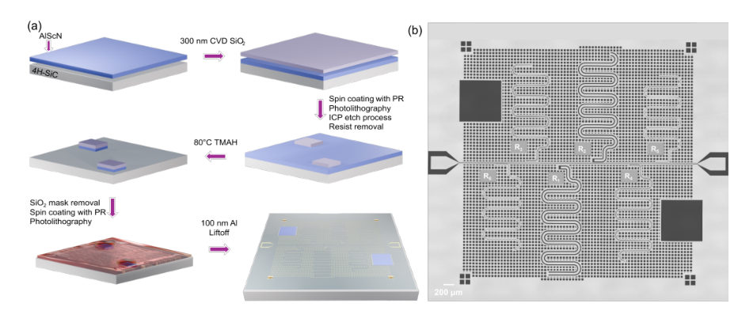
<figcaption class="paper-figure-caption"><b>Fig 1.</b> Fig. 1. (a) Fabrication process flow of the combined AlScN waveguides and superconducting resonators on SiC. (b) Optical image of six superconducting coplanar waveguides (CPWs) with different design parameters as shown in Table I.</figcaption>
</figure>
<figure class="paper-figure-card">
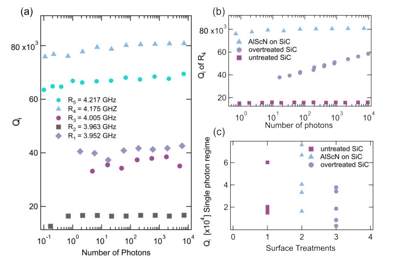
<figcaption class="paper-figure-caption"><b>Fig 2.</b> Fig. 2. (a) Quality factor measurements of five resonators fabricated on AlScN-on-SiC. Among these, the resonator R4 (4.175 GHz) demonstrates the best performance at lower power, featuring a gap of 5 µm. (b) The quality factor of R4 improves by a factor of 4 after undergoing the AlScN-on-SiC surface treatment compared to untreated sample. (c) Quality factor measurements at the single-photon limit for the designed resonators subjected to different surface treatment processes.</figcaption>
</figure>
<figure class="paper-figure-card">
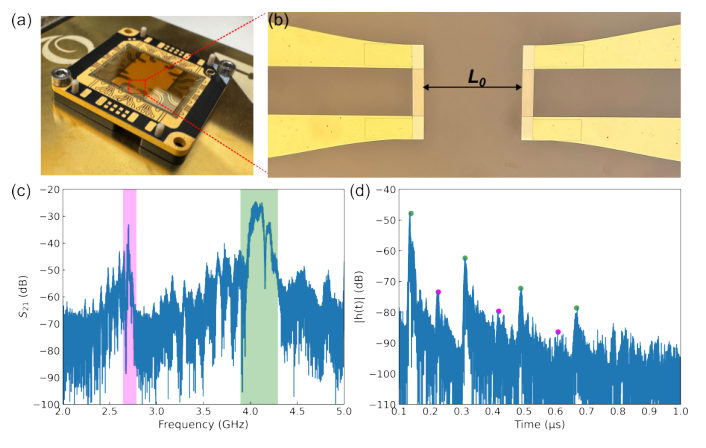
<figcaption class="paper-figure-caption"><b>Fig 3.</b> Fig. 3. (a) A photograph of the AlScN-on-SiC chip with phononic delay lines. (b) A microscope image of the phononic delay line with propagation length L0 = 500 µm. (c) Example normalized S21 transmission data for the phononic delay line with L0 = 500 µm at 7 mK. The Rayleigh mode and Sezawa mode peaks are marked with pink and green background respectively. (d) The impulse response of the phononic delay line with L0 = 500 µm at 7 mK, normalized to the full measurement bandwidth. The peaks of the Rayleigh and Sezawa echoes are marked with pink and green dots, respectively.</figcaption>
</figure>
<figure class="paper-figure-card">
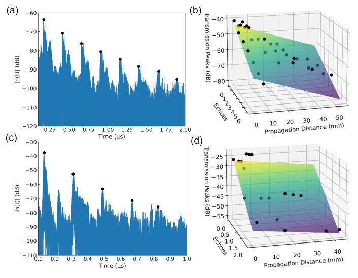
<figcaption class="paper-figure-caption"><b>Fig 4.</b> Fig. 4. (a) The impulse response |h| of the Rayleigh mode in the 500 µm delay line at 7 mK, normalized to the filter passband. (b) The amplitudes of the Rayleigh mode echo peaks are fitted into a plane against the number of echoes and propagation distances. (c) The impulse response |h| of the Sezawa mode in the 500 µm delay line at 7 mK, normalized to the filter passband. (d) The amplitudes of the Sezawa mode echo peaks are fitted into a plane against the number of echoes and propagation distances.</figcaption>
</figure>
<figure class="paper-figure-card">
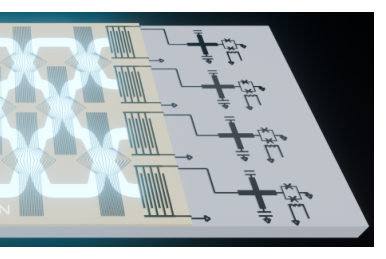
<figcaption class="paper-figure-caption"><b>Fig 5.</b> Fig. 5. Conceptual picture of a phononic static Gaussian boson sampling circuit in AlScN-on-SiC.</figcaption>
</figure>
</div>

<p><strong>Summary.</strong> The paper presents an experimental demonstration of a monolithic platform integrating superconducting microwave circuits with low-loss piezoelectric phonons using $   ext{AlScN}$ grown on $  ext{SiC}$. By selectively etching the material, they create a structure that supports both high-quality superconducting resonators and long-lived acoustic waveguides. This establishes a promising starting point for building complex quantum processors utilizing phonon mediation.</p>
<p><strong>Why it may be interesting.</strong> This work directly addresses the integration challenge in quantum hardware by proposing a material system ($ ext{AlScN/SiC}$) that allows for coexisting superconducting and phononic elements on one chip, which is crucial for realizing scalable hybrid quantum processors.</p>
<details>
<summary>Detailed structure</summary>
<p><strong>Main problem.</strong> The goal is to develop a scalable, monolithic platform that can efficiently couple superconducting microwave circuits with low-loss microwave phonons for quantum applications.</p>
<p><strong>Main result.</strong> The authors demonstrated the feasibility of an Al-on-SiC/AlScN-on-SiC architecture, achieving measurable lifetimes ($  ext{T}_1 \approx 2.9 \mu    ext{s}$, phonon $   au \approx 7.6 \mu  ext{s}$) and a coupling coefficient ($eta \approx 4.3\%$) suitable for hybrid quantum systems.</p>
<p><strong>Method.</strong> The methodology involves fabricating superconducting resonators directly on exposed SiC regions while preserving adjacent AlScN-on-SiC regions for phonon transduction, followed by cryogenic characterization of both components.</p>
<p><strong>Model / system.</strong> The physical system is a monolithic heterostructure combining aluminum superconducting circuits (CPW resonators) with piezoelectric Aluminum Scandium Nitride ($    ext{AlScN}$) grown on a Silicon Carbide ($   ext{SiC}$) substrate. The coupling mechanism relies on the piezoelectric effect to mediate interaction between microwave photons and acoustic phonons.</p>
<p><strong>Key observables.</strong> Superconducting resonator coherent lifetime ($2.9 \mu	ext{s}$), low phononic propagation loss at $4.05 	ext{ GHz}$, estimated phonon lifetime ($7.6 \mu	ext{s}$), and electromechanical coupling coefficient ($\approx 4.3\%$).</p>
<p><strong>Important parameters / regimes.</strong> Operating frequency around $4.175 	ext{ GHz}$; coherence times in the microsecond regime; theoretical upper bound for $eta$ of $8\%$.</p>
<p><strong>Assumptions / limitations.</strong> The primary assumption is that selective etching and material deposition can create a stable, low-loss interface supporting both superconducting metal films and piezoelectric phononic layers simultaneously.</p>
<p><strong>Figures summary.</strong> Figure 5 conceptually illustrates the potential application of this platform for quantum acoustic circuits, such as Gaussian boson sampling, within the AlScN-on-SiC structure.</p>
<p><strong>Paper structure.</strong> The paper establishes the need for a monolithic coupling platform, details the proposed $  ext{Al}$-on-$  ext{SiC}/   ext{AlScN}$-on-$   ext{SiC}$ architecture via selective etching, and presents characterization results showing compatible lifetimes and measurable electromechanical coupling.</p>
</details>
<details>
<summary>Abstract</summary>
<p>Hybrid superconducting-phonon quantum processing is promising for cavity QED, measurement-based quantum computing, and other quantum applications. Relative to microwave photons at the same frequency, phonons can provide ultra-compact footprints, extremely low losses, and greater connectivity. Phonons can also couple strongly to superconducting circuits through the piezoelectric effect. However, this promise rests on scalable platforms that achieve these benefits without degrading superconducting circuit performance. This motivates a monolithic platform combining low phononic loss, strong electromechanical coupling, and superconducting-circuit compatibility without requiring suspended phononics. Here, we characterize a monolithic quantum acoustic platform combining aluminum superconducting circuits on exposed silicon carbide (SiC) with piezoelectric aluminum scandium nitride (AlScN) on SiC for integrated phononics. This architecture is enabled by selective removal of AlScN from selected chip regions, allowing aluminum superconducting microwave resonators to be fabricated directly on the SiC while preserving adjacent AlScN-on-SiC regions for phonon transduction. The resulting Al-on-SiC resonators exhibit a coherent lifetime of 2.9 μs, demonstrating compatibility with aluminum superconducting quantum devices. In parallel, cryogenic surface acoustic delay-line measurements on the retained AlScN-on-SiC regions show low phononic propagation loss at 4.05 GHz, corresponding to an estimated phonon lifetime of 7.6 μs. Together with a previously demonstrated electromechanical coupling coefficient of about 4.3% and a theoretical upper bound of 8%, these results establish Al-on-SiC/AlScN-on-SiC as a promising monolithic platform for integrating superconducting microwave circuits with piezoelectric phononic components for quantum acoustic networking and hybrid quantum systems.</p>
</details>
<p><sub><a href="#top">↑ back to top</a></sub></p>

<p><a id="paper-2607.14583"></a></p>
<h3 id="exact-no-signaling-in-time-without-temporal-classicality"><a href="http://arxiv.org/abs/2607.14583v1">Exact No Signaling in Time without Temporal Classicality</a></h3>
<p><strong>Authors:</strong> Minsu Kim, Jeongho Bang, Han Seb Moon<br>
<strong>Type:</strong> theory · <strong>Category:</strong> other · <strong>PDF:</strong> <a href="https://arxiv.org/pdf/2607.14583v1">https://arxiv.org/pdf/2607.14583v1</a><br>
<strong>Analysis basis:</strong> full PDF text, analyzed in chunks
<strong>Topic relevance:</strong> 🔥 <code>quantum measurements</code> <strong>4/5</strong> · <code>measurement-induced transitions</code> <strong>3/5</strong> · <code>correlated / nonlocal dissipation</code> <strong>1/5</strong> · <code>driven-dissipative phase transition</code> <strong>1/5</strong> · <code>entanglement &amp; information structure</code> <strong>1/5</strong> · <code>methods for driven-dissipative</code> <strong>1/5</strong></p>
<div class="figure-strip-hint">↔ Scroll figures horizontally</div>
<div class="paper-figures-scroll">
<figure class="paper-figure-card">

<figcaption class="paper-figure-caption"><b>Fig 1.</b> FIG. 1. Analytic separation on the CFP manifold. (a) Equal-spacing LGI margin K1 −1 over time and CFP weight; the white dashed line marks λ = 2/3 and the cross marks Ωt = π/9. (b) The exact maximum margin and branch displacement vanish only at the dark state; the vertical line marks λ = 2/3.</figcaption>
</figure>
<figure class="paper-figure-card">
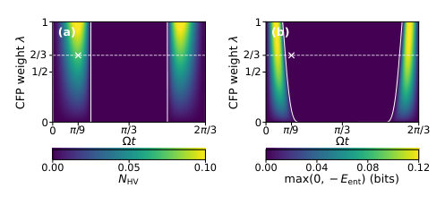
<figcaption class="paper-figure-caption"><b>Fig 2.</b> FIG. 2. Hard hidden-variable and entropic scans. (a) Full-manifold signed hidden-variable negativity NHV from a 1201 × 801 compat- ibility calculation, with LP spot checks. (b) Entropic LGI violation strength max(0, −Eent) on the same grid. White contours are zero- obstruction boundaries; dashed lines mark ˆI/3, and crosses mark Ωt = π/9.</figcaption>
</figure>
<figure class="paper-figure-card">
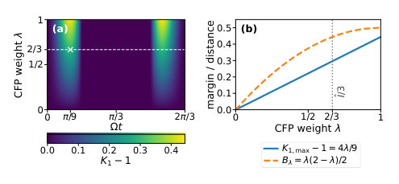
<figcaption class="paper-figure-caption"><b>Fig 3.</b> Figure 1 visualizes this result: the dashed λ = 2/3 slice and the cross at Ωt = π/9 lie in the positive-margin region, while panel (b) shows that both K1,max −1 and Bλ vanish only at λ = 0. Every λ &gt; 0 therefore violates an LGI despite exact NSIT; the maximally mixed state gives K1,max = 35/27.</figcaption>
</figure>
<figure class="paper-figure-card">
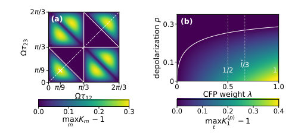
<figcaption class="paper-figure-caption"><b>Fig 4.</b> FIG. 3. Numerical stress tests. (a) Full two-interval landscape for the maximally mixed CFP; the dashed line is the equal-spacing slice and the cross is Ωτ12 = Ωτ23 = π/9. (b) Optimized depolarizing-noise phase diagram. The white curve is the classical boundary; dotted cuts indicate the representative CFP weights λ = 1/2, 2/3, 1.</figcaption>
</figure>
</div>

<p><strong>Summary.</strong> The paper investigates whether 'No Signaling in Time' (NSIT), which requires that outcome-erased measurements leave marginal statistics unchanged, implies a classical temporal history. By analyzing the Common Fixed Points of a qutrit ring system, the authors prove that NSIT is merely a statement about marginal signal erasure and does not preclude violations of macrorealist inequalities like the Leggett–Garg inequality.</p>
<p><strong>Why it may be interesting.</strong> This work provides a rigorous theoretical tool to distinguish between purely marginal constraints (like NSIT) and deeper assumptions about quantum reality, such as macrorealism or noninvasive measurement.</p>
<details>
<summary>Detailed structure</summary>
<p><strong>Main problem.</strong> The paper addresses the interpretational ambiguity of No-Signaling-in-Time (NSIT): whether satisfying NSIT implies noninvasive measurability and thus a classical temporal history.</p>
<p><strong>Main result.</strong> They show that exact pairwise NSIT is insufficient to guarantee a classical temporal history, as states satisfying NSIT can still violate Leggett–Garg inequalities (LGI).</p>
<p><strong>Method.</strong> The authors analyze the Common Fixed Points (CFPs) of nonselective measurement channels on a specific quantum system and test these points against LGI violations using various diagnostics.</p>
<p><strong>Model / system.</strong> The model is a qutrit ring subject to local degenerate Lüders measurements, analyzed by considering the full manifold of CFPs derived from time evolution and measurement processes.</p>
<p><strong>Key observables.</strong> Pairwise NSIT ($\eta_{	ext{NSIT}}$), Leggett–Garg inequality violation strength ($K_1$), Hidden-Variable Negativity (NHV), and Branch Displacement ($B_\lambda$).</p>
<p><strong>Important parameters / regimes.</strong> The parameter $\lambda$ characterizing the state on the CFP manifold, and time intervals for sequential measurements.</p>
<p><strong>Assumptions / limitations.</strong> The analysis focuses on a specific protocol involving equal spacing of measurement times; the conclusion is limited to pairwise NSIT conditions.</p>
<p><strong>Figures summary.</strong> Figures illustrate the analytic separation on the CFP manifold showing LGI margins vs. $\lambda$, and show NHV/entropic LGI violation strength over the CFP-time grid, confirming violations for non-trivial states.</p>
<p><strong>Paper structure.</strong> The paper establishes NSIT via CFPs, then analyzes the resulting state manifold ($\hat{
ho}^*(\lambda)$). It demonstrates that while all $\lambda>0$ satisfy NSIT, they violate LGI, contrasting this with the unique classical point at $\lambda=0$.</p>
</details>
<details>
<summary>Abstract</summary>
<p>No signaling in time (NSIT) has often been treated as the clean operational remnant of noninvasive measurability. If an earlier measurement leaves every later marginal unchanged, the temporal process appears classical. We show that this inference is false. We introduce common fixed points (CFPs) of nonselective measurement channels as an exact mechanism that erases all marginal evidence of invasiveness while preserving disturbed outcome conditioned branches. For a qutrit ring subject to a local degenerate Luders measurement, we solve the full CFP manifold analytically. Every state on this manifold satisfies exact pairwise NSIT, yet every nontrivial member violates a Leggett Garg inequality, including the maximally mixed state. The violation is governed by finite branch displacement, not by residual signaling. Hidden variable reconstruction, entropic witnesses, protocol landscape scans, noise robustness, and finite shot simulations show that exact NSIT certifies only the disappearance of marginal signals after outcome erasure, not the existence of a classical temporal history.</p>
</details>
<p><sub><a href="#top">↑ back to top</a></sub></p>

<p><a id="paper-2607.14477"></a></p>
<h3 id="a-generalized-variational-quantum-linear-solver-on-photonic-platform"><a href="http://arxiv.org/abs/2607.14477v1">A generalized variational quantum linear solver on photonic platform</a></h3>
<p><strong>Authors:</strong> Kang Gao, Zhao-An Wang, Ze-Guo Wang, Mao-Mao Huang, Hai Wei, Kai Wen<br>
<strong>Type:</strong> both · <strong>Category:</strong> quantum information and computing · <strong>PDF:</strong> <a href="https://arxiv.org/pdf/2607.14477v1">https://arxiv.org/pdf/2607.14477v1</a><br>
<strong>Analysis basis:</strong> full PDF text, analyzed in chunks
<strong>Topic relevance:</strong> 🔥 <code>QC/QI experiment</code> <strong>4/5</strong> · <code>analog quantum simulation</code> <strong>3/5</strong> · <code>quantum optics experiment</code> <strong>2/5</strong> · <code>methods for driven-dissipative</code> <strong>1/5</strong></p>
<div class="figure-strip-hint">↔ Scroll figures horizontally</div>
<div class="paper-figures-scroll">
<figure class="paper-figure-card">
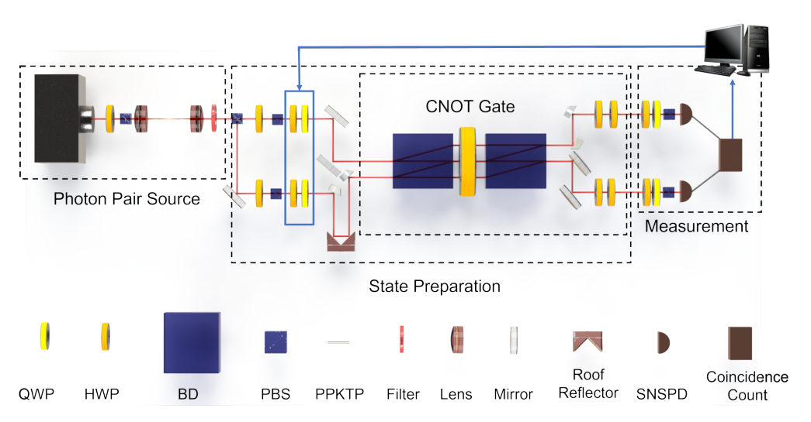
<figcaption class="paper-figure-caption"><b>Fig 1.</b> Fig. 1. Experimental setup. Telecom-band photon pairs are generated and pass through a state preparation process including a CNOT gate and are subjected to coincidence measurement. The measurement results are analyzed and exploited to update the angles of waveplates enclosed in the blue frame. QWP: quarter waveplate, HWP: half waveplate, BD: beam displacer, PBS: polarization beam splitter, SNSPD: superconducting nanowire single photon detector.</figcaption>
</figure>
<figure class="paper-figure-card">
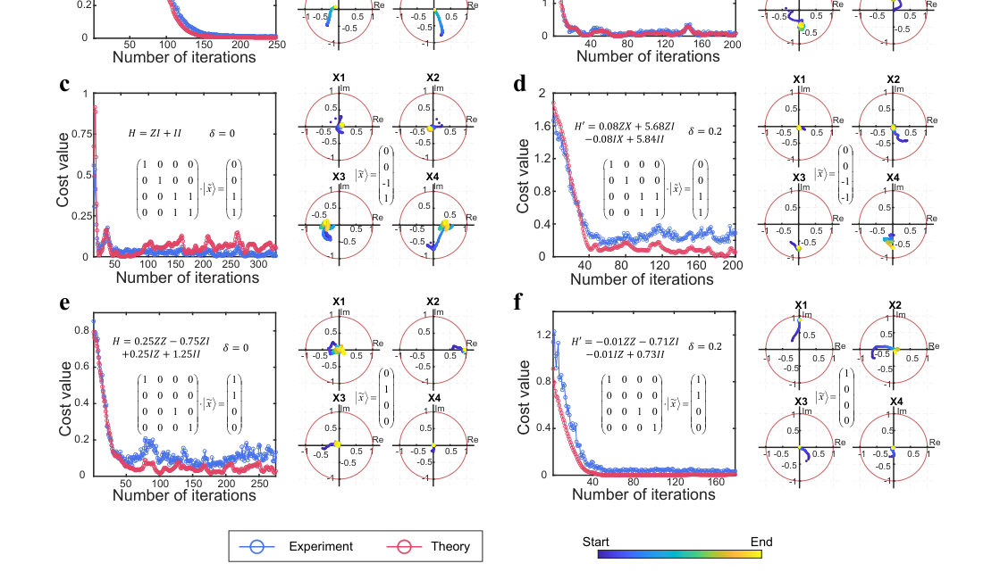
<figcaption class="paper-figure-caption"><b>Fig 2.</b> Fig. 2. Demonstration of VQLS in complex field. a-b: The coefficient matrix A is non-singular and the linear system has a unique solution. c-d: A is singular and the system has infinitely many solutions. The system is solved without (c) and with Tikhonov regularization (δ = 0.2, d), respectively. An approximated solution can be obtained in the latter circumstances. e-f. The system has no solution and is solved without (e) and with Tikhonov regularization (δ = 0.2, f), respectively. The final |˜x⟩in neither circumstances is verified the solution of the system. The left subplot in each panel is the optimization process of the cost value. The blue and red points and lines represent...</figcaption>
</figure>
<figure class="paper-figure-card">
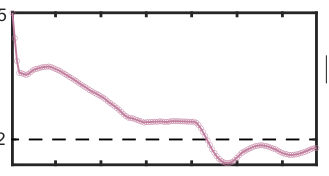
<figcaption class="paper-figure-caption"><b>Fig 3.</b> Fig. 3. Demonstration of Modulo 2 VQLS. Four Hamiltonians are introduced according to the rows of A and restrictions are imposed on the entries of |˜x⟩via the Pauli measurements. The upper subplot is the optimiza- tion process of the cost value. The blue and red points and lines represent experimental cost value and the theoreti- cal results from the same set of θ. The lower two subplots exhibit the trajectories of the entries of |x⟩and γ. Dotted lines indicate the true solution values for both the entries of |x⟩and γ.</figcaption>
</figure>
</div>

<p><strong>Summary.</strong> This paper experimentally validates a generalized Variational Quantum Linear Solver (VQLS) using a photonic platform to solve linear equations over both complex numbers and the finite field $\mathbb{F}_2$. The authors successfully tackle practical challenges, such as system singularity in the complex domain via regularization, while developing a robust modulo-2 approach for applications like stabilizer coding. This work establishes an experimental foundation for applying VQLS in real quantum computing scenarios.</p>
<p><strong>Why it may be interesting.</strong> The direct experimental implementation of quantum algorithms like VQLS on photonic hardware provides crucial physical validation. The extension to finite fields ($\mathbb{F}_2$) is particularly relevant for applications in coding theory and quantum computation over non-real fields.</p>
<details>
<summary>Detailed structure</summary>
<p><strong>Main problem.</strong> The paper addresses the challenge of solving linear equation systems ($A|	ilde{x}
angle = |	ilde{b}
angle$) in both the complex field and the finite field $\mathbb{F}_2$. It aims to develop a robust Variational Quantum Linear Solver (VQLS) applicable across different mathematical domains.</p>
<p><strong>Main result.</strong> The VQLS was experimentally validated on a photonic platform for 4D systems, successfully handling non-singular cases in the complex field and demonstrating inherent immunity to singularity issues when adapted for $\mathbb{F}_2$.</p>
<p><strong>Method.</strong> The core method involves variational optimization using a cost function minimized via gradient descent. For ill-conditioned problems, Tikhonov regularization is introduced; for $\mathbb{F}_2$, the cost function is redesigned using modulo 2 arithmetic.</p>
<p><strong>Model / system.</strong> The work utilizes a photonic computing platform employing telecom-band photon pairs encoded in polarization to implement quantum gates (e.g., CNOT). The mathematical models involve solving linear systems over $\mathbb{C}$ and $\mathbb{F}_2$.</p>
<p><strong>Key observables.</strong> Deviation $D = ||A |	ilde{x}
angle - |	ilde{b}
angle||^2$, minimum cost value, and the convergence of the trial state $|	ilde{\mathbf{x}}
angle$ to the expected solution.</p>
<p><strong>Important parameters / regimes.</strong> The regularization parameter $\delta$ (for Tikhonov), the field type ($\mathbb{C}$ or $\mathbb{F}_2$), and system dimensions (e.g., 4D systems).</p>
<p><strong>Assumptions / limitations.</strong> In the complex case, singularity requires regularization; in $\mathbb{F}_2$, constraints are necessary because minimizing cost alone is insufficient due to indeterminate phases.</p>
<p><strong>Figures summary.</strong> Figure 1 details the experimental setup using photonic components. Figure 2 illustrates VQLS performance for non-singular, singular, and no-solution cases in the complex field, showing regularization effects. Figure 3 demonstrates the successful application of Modulo 2 VQLS.</p>
<p><strong>Paper structure.</strong> The paper systematically develops the VQLS framework, first applying it to solve linear systems over the complex field (addressing singularity via Tikhonov regularization). It then extends and adapts this methodology for the finite field $\mathbb{F}_2$, concluding with a demonstration of its practical potential across both domains.</p>
</details>
<details>
<summary>Abstract</summary>
<p>Based on a photonic computing platform, we experimentally validate a generalized variational quantum linear solver (VQLS) by systematically solving four-dimensional linear equation systems across different fields. In the complex field, in addition to solving non-singular systems that admit a unique solution, we investigate ill-conditioned problems arising from singularity--an issue frequently encountered in practical applications. To tackle these challenges, we introduce perturbation terms, a treatment inspired by Tikhonov regularization, and develop an algorithm capable of handling a wide range of systems. Furthermore, we extend the VQLS to the finite field F2 by redesigning the cost function to incorporate modulo 2 and imposing several constraints on the solution vector. This modulo 2 VQLS is inherently free from singularity. It is adapt to stabilizer coding theory and may find applications in areas such as decoders and the design of quantum gate sequences. Therefore, our work demonstrates the practical potential of VQLS in quantum computing, providing a solid experimental foundation and methodological guidance for its real-world applications.</p>
</details>
<p><sub><a href="#top">↑ back to top</a></sub></p>

<p><a id="paper-2607.14883"></a></p>
<h3 id="a-geometric-theory-of-fermion-to-qubit-encodings"><a href="http://arxiv.org/abs/2607.14883v1">A Geometric Theory of Fermion-to-Qubit Encodings</a></h3>
<p><strong>Authors:</strong> Lakshya Nagpal, Nishith Reen, S. R. Hassan<br>
<strong>Type:</strong> theory · <strong>Category:</strong> strongly correlated electrons · <strong>PDF:</strong> <a href="https://arxiv.org/pdf/2607.14883v1">https://arxiv.org/pdf/2607.14883v1</a><br>
<strong>Analysis basis:</strong> full PDF text, analyzed in chunks
<strong>Topic relevance:</strong> 🔥 <code>analog quantum simulation</code> <strong>4/5</strong> · <code>entanglement &amp; information structure</code> <strong>3/5</strong> · <code>Kondo &amp; dissipative impurity</code> <strong>1/5</strong> · <code>methods for driven-dissipative</code> <strong>1/5</strong> · <code>non-equilibrium dynamics</code> <strong>1/5</strong></p>
<div class="figure-strip-hint">↔ Scroll figures horizontally</div>
<div class="paper-figures-scroll">
<figure class="paper-figure-card">
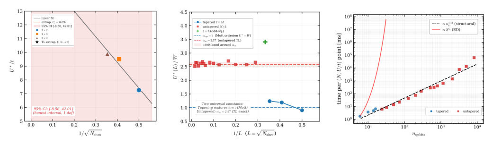
<figcaption class="paper-figure-caption"><b>Fig 1.</b> FIG. 1: Emergence of two geometric universality classes in the Bravyi–Kitaev encoding. (a) Finite-size scaling of the characteristic geometric interaction scale U ∗for tapered BK encodings. Extrapolation to the thermodynamic limit yields Uc/t = 8.87 ± 2.18. The untapered 4 × 4 lattice is shown for comparison but is excluded from the extrapolation because it belongs to a different universality class. (b) Dimensionless interaction ratio α = U ∗/W, where W is the non-interacting bandwidth. Tapered and untapered encodings form two clearly separated branches, demonstrating that the distinction is intrinsic to the geometry of the encoding rather than the lattice size. (c) Computational cost of...</figcaption>
</figure>
<figure class="paper-figure-card">
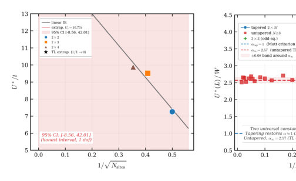
<figcaption class="paper-figure-caption"><b>Fig 2.</b> Figure 1(c) demonstrates that these geometric observ- ables can be computed efficiently using sparse graph op- erations. The computational cost grows smoothly with system size and remains many orders of magnitude below that required for direct many-body diagonalization, em- phasizing that the proposed framework probes structural information contained in the encoded Hamiltonian itself. The existence of two universality classes immediately raises a fundamental question. Why should all untapered Bravyi–Kitaev encodings converge toward the same char- acteristic interaction scale despite their increasing lattice size? Answering this question requires moving beyond the Fiedler eigenvalue and...</figcaption>
</figure>
<figure class="paper-figure-card">
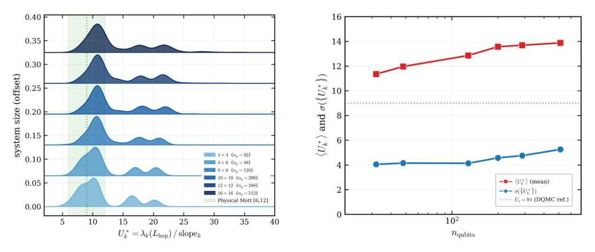
<figcaption class="paper-figure-caption"><b>Fig 3.</b> FIG. 2: Universal spectral organization of the Bravyi–Kitaev hypergraph. (a) Distribution of the characteristic interaction scales U ∗ k obtained from the complete Laplacian spectrum for systems ranging from 4 × 4 to 16 × 16. Rather than forming a continuous distribution, the spectrum separates into two robust branches that remain well separated as the system size increases. (b) Mean value and spectral width of the distributions shown in (a). Both quantities vary only weakly with system size, demonstrating that the overall spectral organization rapidly approaches a universal limit. Together these observations reveal that the Bravyi–Kitaev encoding possesses an intrinsic spectral structure...</figcaption>
</figure>
<figure class="paper-figure-card">
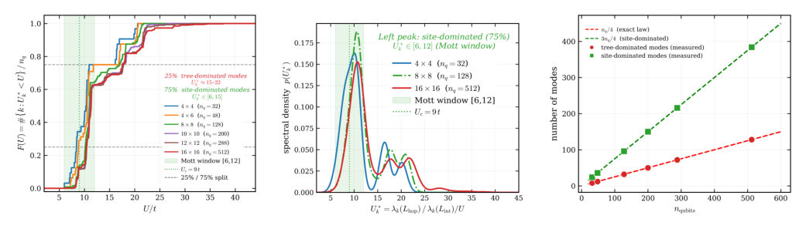
<figcaption class="paper-figure-caption"><b>Fig 4.</b> FIG. 3: Exact spectral partition of the Bravyi–Kitaev interaction hypergraph. (a) Spectral crossing fraction F(U) for representative system sizes. (b) Representative distributions of U ∗ k illustrating the persistence of the two spectral families. (c) Number of tree-dominated modes as a function of the number of qubits. Every system satisfies the exact relation Ntree = nq/4, demonstrating that the interaction spectrum possesses a universal internal organization determined solely by the geometry of the Bravyi–Kitaev encoding.</figcaption>
</figure>
<figure class="paper-figure-card">
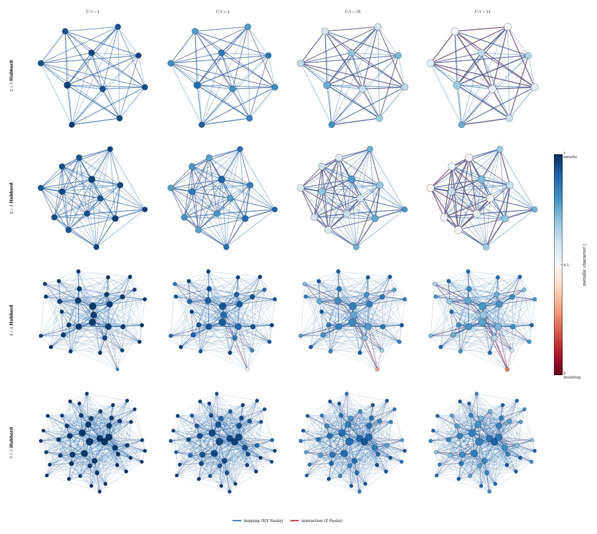
<figcaption class="paper-figure-caption"><b>Fig 5.</b> FIG. 4: Interaction-driven reweighting of the encoded hypergraph. Rows correspond to different Hubbard clusters, while columns show increasing interaction strengths. Blue edges represent hopping-derived Pauli interactions and red edges represent interaction-derived Pauli interactions. Node colour denotes the local metallic character ξ, while node size is proportional to the weighted degree. Increasing interaction strength produces a continuous redistribution of coupling weight from kinetic to interaction sectors without changing the underlying connectivity of the network.</figcaption>
</figure>
</div>

<p><strong>Summary.</strong> This work introduces a geometric framework using weighted hypergraphs to analyze fermion-to-qubit mappings. It shows that these encodings encode more than just spectral information by defining measurable geometric structures. By comparing connectivity metrics (BK) and transport measures (XBK), the authors provide a universal tool to track structural changes in complex quantum Hamiltonians like the Hubbard model.</p>
<p><strong>Why it may be interesting.</strong> It provides powerful, non-spectral diagnostic tools (hypergraph geometry) to analyze how quantum information encoding schemes map physical interactions into structural constraints, which is highly relevant for understanding complex many-body physics simulations.</p>
<details>
<summary>Detailed structure</summary>
<p><strong>Main problem.</strong> To determine if fermion-to-qubit encodings reveal physical structure beyond merely reproducing the spectrum of the original many-body Hamiltonian.</p>
<p><strong>Main result.</strong> The framework establishes hypergraph geometry as a general tool, showing that connectivity and transport metrics consistently capture the structural evolution of encoded Hamiltonians across diverse correlated systems.</p>
<p><strong>Method.</strong> Developing a geometric framework using weighted hypergraphs to analyze two complementary views: spectral connectivity (via graph Laplacians in BK encoding) and coupling-space reorganization (via optimal transport in XBK encoding).</p>
<p><strong>Model / system.</strong> The analysis applies to general interacting fermionic Hamiltonians, exemplified by the Hubbard model, spinless tV chain, single-impurity Anderson model, and Kitaev chain.</p>
<p><strong>Key observables.</strong> Geometric observables like $
ho(U) = \lambda_2(L_{hop})/\lambda_2(L_{int})$ (BK) and Wasserstein distance $W(\mu_1, \mu_2)$ (XBK).</p>
<p><strong>Important parameters / regimes.</strong> Interaction strength ($U$), hopping parameters ($t$), and the characteristic crossover scale $U^*$.</p>
<p><strong>Assumptions / limitations.</strong> The analysis relies on mapping the hypergraph to an equivalent weighted graph using standard clique expansion, and that geometric observables capture physical reorganization.</p>
<p><strong>Figures summary.</strong> Figures illustrate the structural evolution across multiple correlated models, showing consistent signatures of interaction-driven reorganization via spectral observables (BK) and distance comparisons.</p>
<p><strong>Paper structure.</strong> The paper develops a general hypergraph geometry framework, applies it to specific encodings (BK and XBK), derives key geometric observables that quantify connectivity changes, and demonstrates the consistency of these findings across several canonical strongly correlated models.</p>
</details>
<details>
<summary>Abstract</summary>
<p>Exact fermion to qubit transformations are conventionally regarded as algorithmic tools that translate many-body Hamiltonians into qubit representations for quantum simulation. Here we show that they also define intrinsic geometric representations whose structure encodes physically meaningful information beyond spectral equivalence. We develop a geometric framework based on weighted hypergraphs and coupling space representations constructed from the Bravyi--Kitaev (BK) and Xia--Bian--Kais (XBK) encodings. Within the BK representation, we introduce a geometric observable that compares the algebraic connectivities of the kinetic and interaction hypergraphs, derive its exact analytical dependence on interaction strength, and uncover two geometric universality classes together with an exact spectral organization originating from the binary tree architecture of the encoding. The complementary XBK representation describes the evolution of encoded Hamiltonians through probability measures in coupling space, where optimal transport quantifies interaction-driven reorganization independently of the spectral analysis. Applications to the Hubbard, spinless tV , single impurity Anderson, and Kitaev models demonstrate that these connectivity and transport based geometric descriptions consistently capture the structural evolution of encoded quantum Hamiltonians across distinct classes of many-body systems. Our results establish hypergraph geometry as a new framework for understanding fermion-to-qubit encodings,revealing that they serve not only as computational mappings but also as geometric representations of quantum many-body Hamiltonians.</p>
</details>
<p><sub><a href="#top">↑ back to top</a></sub></p>

<p><a id="paper-2607.15093"></a></p>
<h3 id="a-magnetic-monopole-in-a-superfluid-bubble"><a href="http://arxiv.org/abs/2607.15093v1">A magnetic monopole in a superfluid bubble</a></h3>
<p><strong>Authors:</strong> Marianna Sorba, Andrea Richaud<br>
<strong>Type:</strong> both · <strong>Category:</strong> quantum gases · <strong>PDF:</strong> <a href="https://arxiv.org/pdf/2607.15093v1">https://arxiv.org/pdf/2607.15093v1</a><br>
<strong>Analysis basis:</strong> full PDF text, analyzed in chunks
<strong>Topic relevance:</strong> 🔥 <code>analog quantum simulation</code> <strong>4/5</strong> · <code>non-equilibrium dynamics</code> <strong>2/5</strong> · <code>Keldysh / 2PI / non-Gaussian methods</code> <strong>1/5</strong> · <code>correlated / nonlocal dissipation</code> <strong>1/5</strong> · <code>driven-dissipative phase transition</code> <strong>1/5</strong> · <code>methods for driven-dissipative</code> <strong>1/5</strong></p>
<div class="figure-strip-hint">↔ Scroll figures horizontally</div>
<div class="paper-figures-scroll">
<figure class="paper-figure-card">
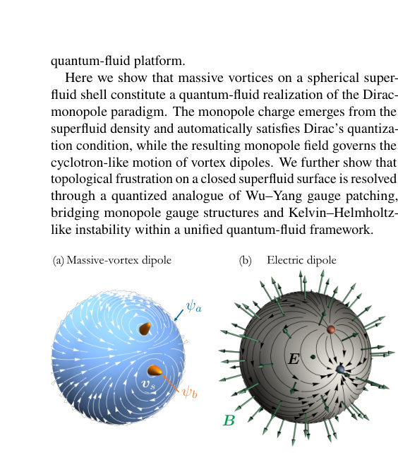
<figcaption class="paper-figure-caption"><b>Fig 1.</b> FIG. 1. Analogy between a massive vortex dipole and an electric dipole in a magnetic monopole field. (a) Massive vortex dipole in an immiscible binary superfluid confined on a spherical surface. The density of component-𝑎, |𝜓𝑎|2, is shown in blue, while the density of component-𝑏, |𝜓𝑏|2, localized within the vortex cores, is shown in orange. The white arrows denote the superfluid velocity field 𝒗𝑠 of component-𝑎. (b) Electric dipole constrained to the surface of a sphere in the presence of a magnetic monopole field 𝑩. Black and green arrows denote the electric and magnetic fields, respectively. The dynamics of massive vortices on the sphere is formally analogous to that of charged particles...</figcaption>
</figure>
<figure class="paper-figure-card">
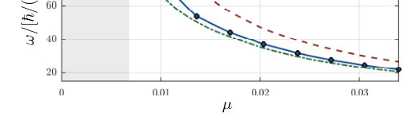
<figcaption class="paper-figure-caption"><b>Fig 2.</b> FIG. 2. Dynamics of a massive vortex dipole on a spherical superfluid. (a) Density profile |𝜓𝑎|2 of a vortex dipole symmetrically located with respect to the equator. The density is approximately uniform over the sphere (blue) except at the vortex cores, where it vanishes (white). The white curves show the vortex trajectories, which result from the superposition of a uniform azimuthal precession and a small-amplitude oscillation of frequency 𝜔. (b) Corresponding phase field arg(𝜓𝑎). (c) Dimensionless oscillation frequency 𝜔𝑚𝑎𝑅2/ℏas a function of the dimensionless vortex mass 𝜇= 𝑀𝑏/𝑀𝑎. Blue dots: numerical simulations; error bars obtained from the sinusoidal fit are smaller than the symbol...</figcaption>
</figure>
<figure class="paper-figure-card">
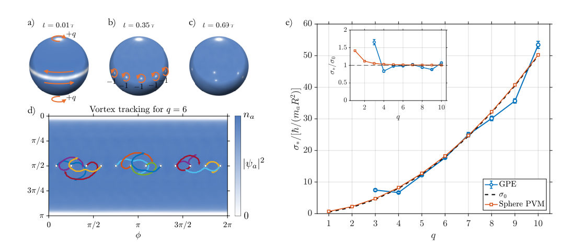
<figcaption class="paper-figure-caption"><b>Fig 3.</b> FIG. 3. Rise and fall of a superfluid shear layer on a sphere. (a) Initial state with two vortices of charge +𝑞imprinted at the poles and separated by an equatorial barrier. The characteristic time scale of the system is 𝜏= 𝑚𝑎𝑅2/ℏ≃0.145 s. (b) Formation of an equatorial vortex necklace composed of 2𝑞vortices of charge −1. (c) Kelvin–Helmholtz-like breakup of the vortex necklace. (d) Trajectories of the 2𝑞vortices on the planisphere obtained from Gross–Pitaevskii simulations following the removal of the equatorial barrier. (e) Maximum instability growth rate 𝜎∗, normalized by the frequency unit 𝜏−1 = ℏ/(𝑚𝑎𝑅2), as a function of the polar vortex charge 𝑞. Blue circles (connected by blue...</figcaption>
</figure>
</div>

<p><strong>Summary.</strong> The authors demonstrate that the dynamics of vortices in a spherical superfluid naturally generate an effective magnetic monopole field, confirming the system's utility for studying Dirac-monopole physics. They analyze vortex motion analogous to charged particles in this field and further study the instability growth of related vortex structures. This establishes spherical superfluids as a versatile platform for exploring fundamental topological quantum phenomena.</p>
<p><strong>Why it may be interesting.</strong> This work provides a concrete, controllable quantum fluid realization of fundamental topological physics (monopoles), linking superfluid dynamics directly to concepts from high-energy theory like Dirac quantization and geometric phases.</p>
<details>
<summary>Detailed structure</summary>
<p><strong>Main problem.</strong> To establish a unified framework realizing the Dirac-monopole paradigm using controllable quantum fluid systems, and to study vortex instabilities related to this structure.</p>
<p><strong>Main result.</strong> The dynamics of massive vortices in a spherical superfluid naturally generate an effective gauge potential equivalent to that of a magnetic monopole, and the system exhibits predicted cyclotron-like motion and subsequent instability growth rates.</p>
<p><strong>Method.</strong> The work combines theoretical derivations (effective Lagrangian, normal-mode analysis) with numerical simulations using the Gross-Pitaevskii equation on a spherical geometry.</p>
<p><strong>Model / system.</strong> The physical platform is an immiscible binary Bose–Einstein condensate confined to a thin spherical shell. The model incorporates vortex interactions and derives effective gauge fields leading to monopole dynamics.</p>
<p><strong>Key observables.</strong> Cyclotron frequency ($\omega_c$), instability growth rate ($\sigma^*$), superfluid density distributions, and the emergent magnetic field ($B_j$).</p>
<p><strong>Important parameters / regimes.</strong> Superfluid density ($
ho_a, 
ho_b$), vortex charge quantization ($q_j g = n\hbar/2$), and effective mass ($M_b$).</p>
<p><strong>Assumptions / limitations.</strong> The analysis assumes the immiscible regime for the condensate and relies on mapping dynamics to an effective gauge structure.</p>
<p><strong>Figures summary.</strong> Figures illustrate the analogy between vortex dipoles and charged particles in a monopole field, show dipole trajectories, and plot the exponential growth of vortex necklace amplitudes over time.</p>
<p><strong>Paper structure.</strong> The paper first establishes the monopole emergence from vortex dynamics on a sphere, then analyzes the resulting cyclotron motion via normal modes and GPE simulations. Finally, it investigates the instability of an equatorial vortex necklace configuration related to Wu-Yang gauge patching.</p>
</details>
<details>
<summary>Abstract</summary>
<p>Magnetic monopoles lie at the crossroads of gauge fields, topology, geometric phases, and charge quantization, yet they remain elusive as fundamental particles. Here we show that an emergent Dirac-monopole framework arises naturally from the dynamics of massive quantum vortices in a spherical superfluid shell. Their dynamics is formally equivalent to that of interacting charged particles constrained to a sphere in the field of a magnetic monopole. The monopole charge is fixed by the superfluid density and automatically satisfies Dirac's quantization condition. The emergent monopole description predicts cyclotron-like vortex motion, in quantitative agreement with Gross--Pitaevskii simulations. We further show that topological frustration induced by two like-charged polar vortices gives rise to the formation of an equatorial vortex necklace, a configuration reminiscent of the polygonal cyclone clusters observed around Jupiter's poles, before its subsequent breakup through a Kelvin--Helmholtz-like instability. Within this framework, the vortex necklace may be viewed as a quantized analogue of Wu--Yang gauge patching. Our results establish spherical superfluids as a versatile platform for realizing and exploring fundamental aspects of Dirac-monopole physics.</p>
</details>
<p><sub><a href="#top">↑ back to top</a></sub></p>

<p><a id="paper-2607.14462"></a></p>
<h3 id="quantum-correlations-of-tripartite-mixed-states-in-the-black-hole-quantum-atmosphere"><a href="http://arxiv.org/abs/2607.14462v1">Quantum correlations of tripartite mixed states in the black hole quantum atmosphere</a></h3>
<p><strong>Authors:</strong> Anqi Zhang, Yanze Zheng, Xiaofen Huang, Tinggui Zhang<br>
<strong>Type:</strong> theory · <strong>Category:</strong> other · <strong>PDF:</strong> <a href="https://arxiv.org/pdf/2607.14462v1">https://arxiv.org/pdf/2607.14462v1</a><br>
<strong>Analysis basis:</strong> full PDF text, analyzed in chunks
<strong>Topic relevance:</strong> 🔥 <code>entanglement &amp; information structure</code> <strong>4/5</strong> · <code>correlated / nonlocal dissipation</code> <strong>2/5</strong> · <code>Keldysh / 2PI / non-Gaussian methods</code> <strong>1/5</strong> · <code>driven-dissipative phase transition</code> <strong>1/5</strong> · <code>methods for driven-dissipative</code> <strong>1/5</strong> · <code>non-equilibrium dynamics</code> <strong>1/5</strong></p>
<div class="figure-strip-hint">↔ Scroll figures horizontally</div>
<div class="paper-figures-scroll">
<figure class="paper-figure-card">
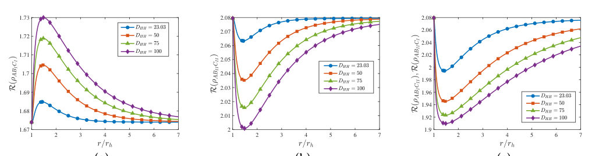
<figcaption class="paper-figure-caption"><b>Fig 1.</b> FIG. 1: Quantum state textures versus the normalized distance r/rh for different constants DHH. Panel (a): R(ρABICI ) versus r/rh; Panel (b): R(ρABIICII ) versus r/rh; and Panel (c): R(ρABICII ) = R(ρABIICI ) versus r/rh. The parameters are set as α = √</figcaption>
</figure>
<figure class="paper-figure-card">
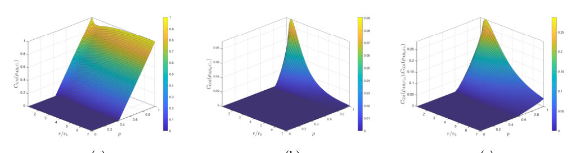
<figcaption class="paper-figure-caption"><b>Fig 2.</b> FIG. 2: Genuine multipartite concurrence CGM as a function of the Werner parameter p and the normalized radial distance r/rh for the four reduced states, with DHH = 50 and α = √</figcaption>
</figure>
<figure class="paper-figure-card">
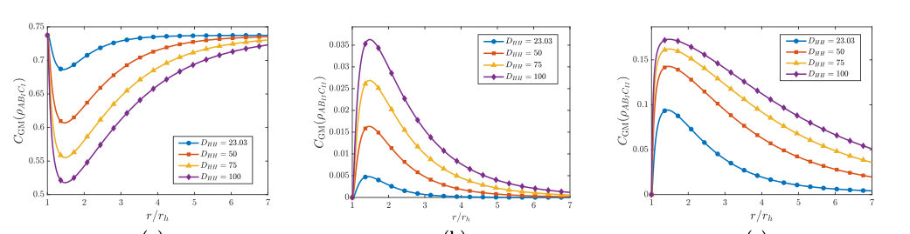
<figcaption class="paper-figure-caption"><b>Fig 3.</b> FIG. 3: Genuine multipartite concurrence CGM versus the normalized radial distance r/rh for different values of DHH. Panel (a): CGM(ρABICI ); Panel (b): CGM(ρABIICII ); and Panel (c): CGM(ρABICII ) = CGM(ρABIICI ). The parameters are fixed as p = 0.85, α = √</figcaption>
</figure>
<figure class="paper-figure-card">
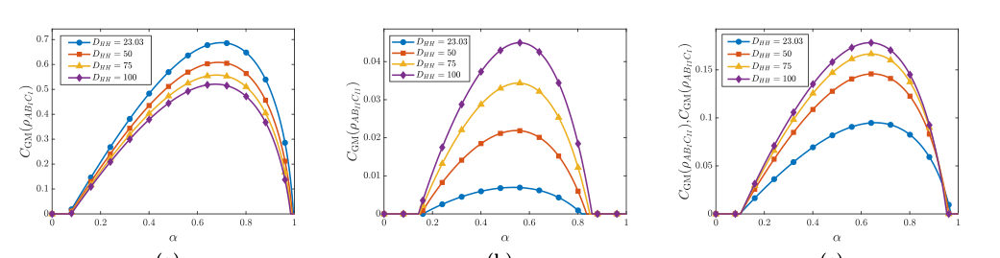
<figcaption class="paper-figure-caption"><b>Fig 4.</b> FIG. 4: Genuine multipartite concurrence CGM versus the state parameter α for different values of DHH, with r/rh = 1.5 and p = 0.85. Panel (a): CGM(ρABICI ); Panel (b): CGM(ρABIICII ); and Panel (c): CGM(ρABICII ) = CGM(ρABIICI ).</figcaption>
</figure>
<figure class="paper-figure-card">
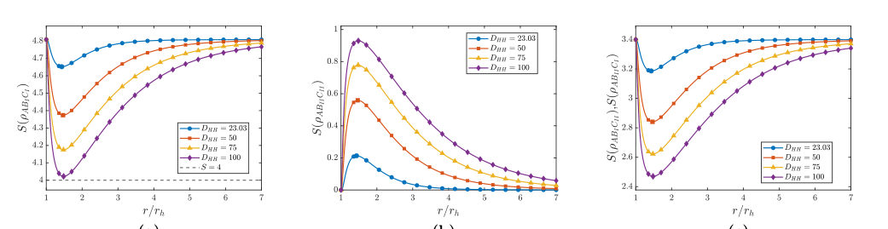
<figcaption class="paper-figure-caption"><b>Fig 5.</b> FIG. 5: Svetlichny value S versus the normalized radial distance r/rh for different values of DHH. Panel (a): S(ρABICI ); Panel (b): S(ρABIICII ); and Panel (c): S(ρABICII ) = S(ρABIICI ). The parameters are fixed as p = 0.85, α = √</figcaption>
</figure>
</div>

<p><strong>Summary.</strong> This paper analyzes the fate of tripartite quantum correlations—including entanglement and nonlocality—in a mixed state situated in the vicinity of a black hole. By incorporating the local Hawking temperature, the authors demonstrate that while all three resources are sensitive to the near-horizon region, genuine multipartite nonlocality is particularly fragile against increasing local thermal effects.</p>
<p><strong>Why it may be interesting.</strong> This work provides a theoretical framework for understanding how fundamental quantum correlations are modified by extreme gravitational environments, offering insights into information loss mechanisms beyond standard Hawking radiation calculations.</p>
<details>
<summary>Detailed structure</summary>
<p><strong>Main problem.</strong> The study investigates how quantum state texture, genuine multipartite entanglement, and tripartite nonlocality are affected by the local Hawking effect in a black hole's quantum atmosphere.</p>
<p><strong>Main result.</strong> All three quantum resources show their extrema tracking the same near-horizon region, but tripartite nonlocality is found to be significantly more fragile than entanglement under stronger local Hawking effects.</p>
<p><strong>Method.</strong> The authors use Bogoliubov transformations and partial tracing techniques to derive physically accessible reduced density matrices for a tripartite mixed state. They quantify correlations using quantum state texture, genuine multipartite concurrence, and the Svetlichny inequality.</p>
<p><strong>Model / system.</strong> The system is modeled as a tripartite mixed state ($
ho_{ABC}$) near a Schwarzschild black hole horizon, incorporating the Hartle-Hawking local temperature ($T_{HH}$). The analysis focuses on the physically accessible reduced state $
ho_{ABICI}$.</p>
<p><strong>Key observables.</strong> Quantum state texture $R(
ho)$, Genuine multipartite entanglement (using CGM), and Tripartite nonlocality (violation of Svetlichny inequality, $S > 4$).</p>
<p><strong>Important parameters / regimes.</strong> Local Hawking temperature ($T_{HH}$), mixing parameter $p$, and the black hole characteristic scale factor $D_{HH}$.</p>
<p><strong>Assumptions / limitations.</strong> The analysis assumes a specific X-state structure for the density matrix and models the environment using the Hartle-Hawking vacuum approach.</p>
<p><strong>Figures summary.</strong> Figures illustrate the radial dependence of quantum state texture, CGM, and Svetlichny value ($S$) near the horizon, showing how these quantities track $T_{HH}(r)$ and are suppressed by increasing $D_{HH}$.</p>
<p><strong>Paper structure.</strong> The paper systematically analyzes three distinct measures of quantum correlation (texture, entanglement, nonlocality) across varying radial positions and environmental parameters, culminating in a unified characterization of resource redistribution.</p>
</details>
<details>
<summary>Abstract</summary>
<p>We investigate quantum state texture, genuine multipartite entanglement, and tripartite nonlocality of a tripartite mixed state in the black hole quantum atmosphere. By introducing the Hartle-Hawking local temperature into the Bogoliubov coefficients, we characterize the influence of the local Hawking effect on both physically accessible and inaccessible reduced states. We find that the extrema of these three quantities all lie in the same near horizon region and shift outward with increasing local Hawking temperature, coinciding with the peak region of the local Hawking temperature and indicating that different aspects of tripartite quantum information are most sensitive to the local Hawking effect in the same atmospheric region. In contrast to genuine multipartite entanglement, tripartite nonlocality is more fragile and is suppressed under stronger local Hawking effects. These results provide a unified characterization of density matrix restructuring, entanglement redistribution, and nonlocality in tripartite mixed states affected by the black hole quantum atmosphere.</p>
</details>
<p><sub><a href="#top">↑ back to top</a></sub></p>

<p><a id="paper-2607.14401"></a></p>
<h3 id="efficient-quantum-algorithm-for-heisenberg-spin-systems"><a href="http://arxiv.org/abs/2607.14401v1">Efficient quantum algorithm for Heisenberg spin systems</a></h3>
<p><strong>Authors:</strong> Sergey Bravyi, David Gosset, Yinchen Liu, Benjamin Wong<br>
<strong>Type:</strong> theory · <strong>Category:</strong> quantum information and computing · <strong>PDF:</strong> <a href="https://arxiv.org/pdf/2607.14401v1">https://arxiv.org/pdf/2607.14401v1</a><br>
<strong>Analysis basis:</strong> full PDF text, analyzed in chunks
<strong>Topic relevance:</strong> 🔥 <code>analog quantum simulation</code> <strong>4/5</strong> · <code>exotic spin models in light-matter</code> <strong>3/5</strong> · <code>Keldysh / 2PI / non-Gaussian methods</code> <strong>1/5</strong> · <code>entanglement &amp; information structure</code> <strong>1/5</strong></p>
<div class="figure-strip-hint">↔ Scroll figures horizontally</div>
<div class="paper-figures-scroll">
<figure class="paper-figure-card">
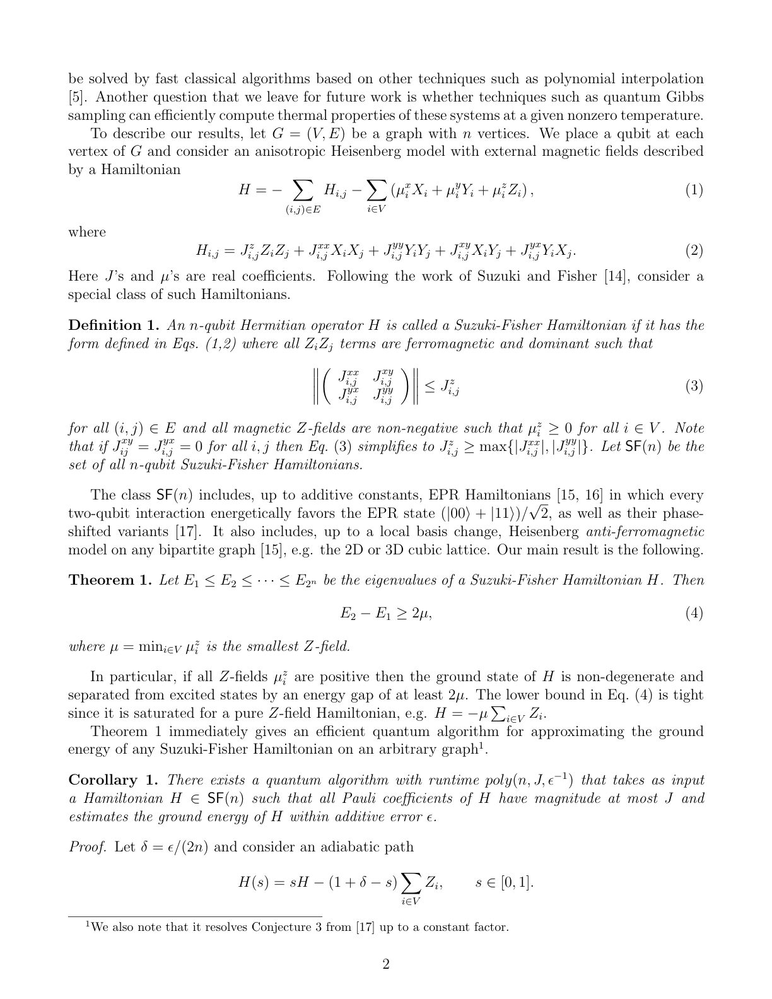
<figcaption class="paper-figure-caption"><b>Fig 1.</b> Low-resolution page preview, page 2</figcaption>
</figure>
<figure class="paper-figure-card">
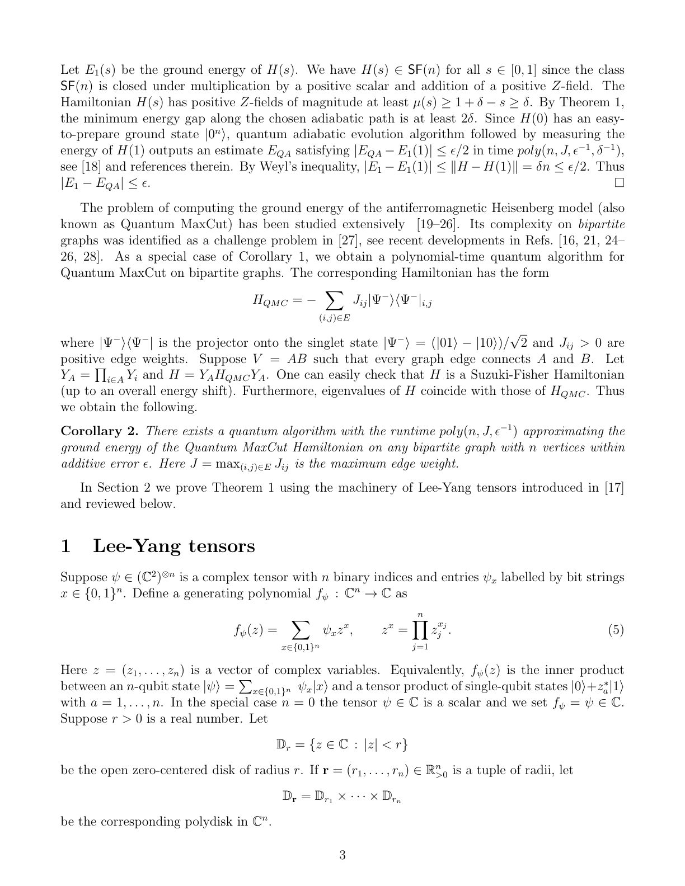
<figcaption class="paper-figure-caption"><b>Fig 2.</b> Low-resolution page preview, page 3</figcaption>
</figure>
<figure class="paper-figure-card">
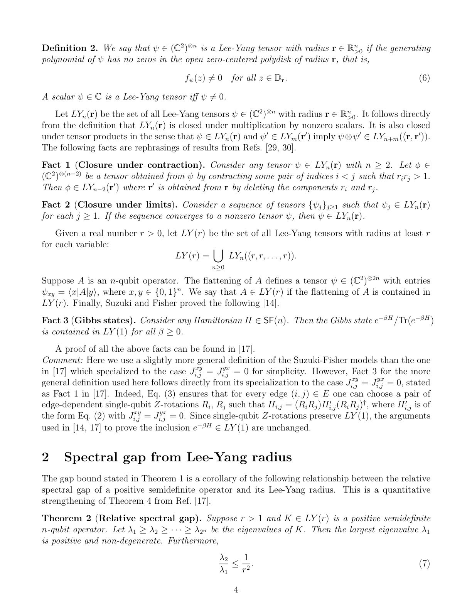
<figcaption class="paper-figure-caption"><b>Fig 3.</b> Low-resolution page preview, page 4</figcaption>
</figure>
<figure class="paper-figure-card">
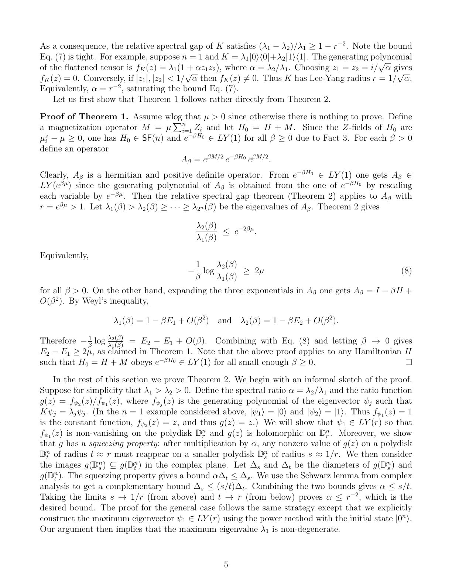
<figcaption class="paper-figure-caption"><b>Fig 4.</b> Low-resolution page preview, page 5</figcaption>
</figure>
<figure class="paper-figure-card">
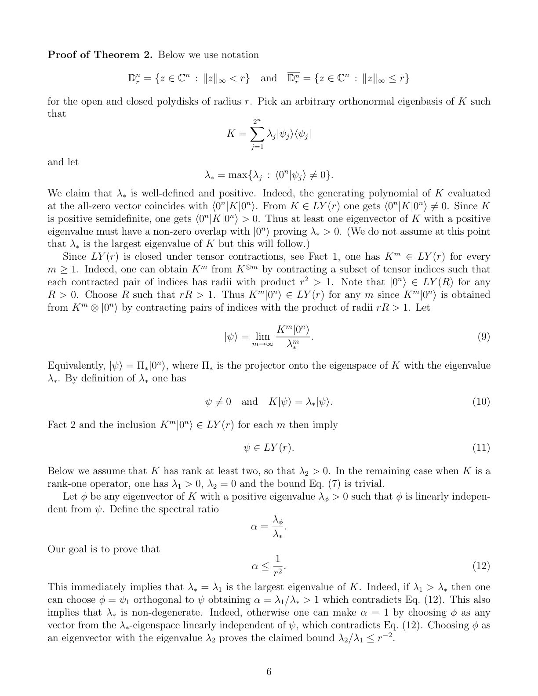
<figcaption class="paper-figure-caption"><b>Fig 5.</b> Low-resolution page preview, page 6</figcaption>
</figure>
</div>

<p><strong>Summary.</strong> This paper develops an efficient quantum adiabatic algorithm to find the ground energy of specific Heisenberg spin systems. It achieves this by proving a novel mathematical inequality that links the spectral gap of these Hamiltonians to their Lee-Yang radius. This work provides a powerful theoretical framework connecting complex analysis tools to fundamental problems in quantum many-body physics.</p>
<p><strong>Why it may be interesting.</strong> The connection drawn between algebraic properties (Lee-Yang radii) and physical observables (spectral gaps/ground state energy) provides a powerful, non-standard mathematical tool for analyzing hard problems in condensed matter physics, which is highly relevant for understanding computational complexity bounds.</p>
<details>
<summary>Detailed structure</summary>
<p><strong>Main problem.</strong> The primary goal is developing an efficient quantum algorithm to compute the ground energy of specific, complex Heisenberg spin systems.</p>
<p><strong>Main result.</strong> The authors prove that for a broad family of Suzuki-Fisher type Hamiltonians, the spectral gap between the first excited and ground state is lower bounded by $2\mu$, enabling an efficient adiabatic quantum computation approach.</p>
<p><strong>Method.</strong> The proof combines techniques from complex analysis (using Lee-Yang polynomials) to establish a quantitative relationship between the relative spectral gap of an operator and its associated Lee-Yang radius. This mathematical tool is then applied to bound the energy gap for the physical Hamiltonians.</p>
<p><strong>Model / system.</strong> The study focuses on a family of Heisenberg-type quantum spin systems, including the antiferromagnet on bipartite graphs, governed by anisotropic Heisenberg Hamiltonians (Suzuki-Fisher type). The analysis uses concepts derived from Lee-Yang theory applied to these many-body operators.</p>
<p><strong>Key observables.</strong> Ground state energy, spectral gap ($\Delta E$), and the relative spectral gap $(\lambda_1 - \lambda_2)/\lambda_1$.</p>
<p><strong>Important parameters / regimes.</strong> The magnetic field strength $\mu$ (specifically $\min \mu_{z,i}$), and the Lee-Yang radius $r$.</p>
<p><strong>Assumptions / limitations.</strong> The analysis relies on the operator being positive semidefinite and belonging to a specific class defined by its generating polynomial's zero-freeness property (Lee-Yang tensors).</p>
<p><strong>Paper structure.</strong> The paper first establishes a general mathematical inequality relating the spectral gap of a positive semidefinite operator $K$ to its Lee-Yang radius ($r$). This result is then specialized and applied to prove a lower bound on the spectral gap for Hamiltonians in the Suzuki-Fisher family, leading directly to the construction of an efficient quantum adiabatic algorithm.</p>
</details>
<details>
<summary>Abstract</summary>
<p>We consider a broad family of Heisenberg-type quantum spin systems that were studied by Suzuki and Fisher in 1971. This family includes, for example, the Heisenberg antiferromagnet on any bipartite graph. The ground and Gibbs states of these models are Lee-Yang tensors with radius 1: they are associated with multilinear polynomials that possess an extraordinary zero-freeness property inside the unit polydisk in the complex plane. For each Hamiltonian in this family we show that the spectral gap between the first-excited and ground-state energies is lower bounded by $2μ$, where $μ$ is the magnetic field along the $Z$ direction. Using this result we obtain an efficient quantum adiabatic algorithm for the ground energy of any model in this family. The proof is based on a new inequality that relates the spectral gap of a positive semidefinite operator to its Lee-Yang radius -- a quantitative strengthening of prior work of the authors that may find applications elsewhere.</p>
</details>
<p><sub><a href="#top">↑ back to top</a></sub></p>

<p><a id="paper-2607.15201"></a></p>
<h3 id="entanglement-detection-for-two-qubit-and-three-qubit-pure-states-via-unitary-transformations-and-ancilla-state-measurements"><a href="http://arxiv.org/abs/2607.15201v1">Entanglement Detection for Two-Qubit and Three-Qubit Pure States via Unitary Transformations and Ancilla State Measurements</a></h3>
<p><strong>Authors:</strong> Yu-Hang Liu, Yuan-Hong Tao, Yi-Wen Liu, Ying-Huan Zhou, Shao-Ming Fei<br>
<strong>Type:</strong> theory · <strong>Category:</strong> quantum information and computing · <strong>PDF:</strong> <a href="https://arxiv.org/pdf/2607.15201v1">https://arxiv.org/pdf/2607.15201v1</a><br>
<strong>Analysis basis:</strong> full PDF text, analyzed in chunks
<strong>Topic relevance:</strong> 🔥 <code>entanglement &amp; information structure</code> <strong>4/5</strong> · <code>QC/QI experiment</code> <strong>2/5</strong> · <code>quantum measurements</code> <strong>2/5</strong> · <code>measurement-induced transitions</code> <strong>1/5</strong></p>
<div class="figure-strip-hint">↔ Scroll figures horizontally</div>
<div class="paper-figures-scroll">
<figure class="paper-figure-card">
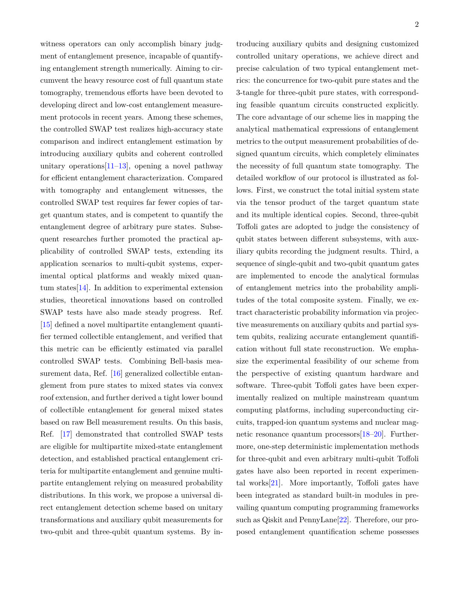
<figcaption class="paper-figure-caption"><b>Fig 1.</b> Low-resolution page preview, page 2</figcaption>
</figure>
<figure class="paper-figure-card">
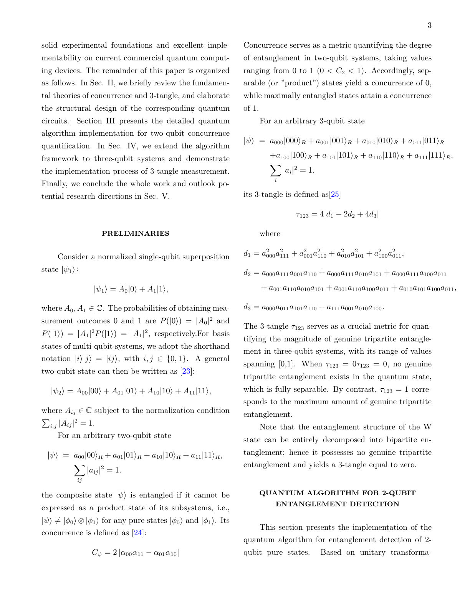
<figcaption class="paper-figure-caption"><b>Fig 2.</b> Low-resolution page preview, page 3</figcaption>
</figure>
<figure class="paper-figure-card">

<figcaption class="paper-figure-caption"><b>Fig 3.</b> Low-resolution page preview, page 4</figcaption>
</figure>
<figure class="paper-figure-card">

<figcaption class="paper-figure-caption"><b>Fig 4.</b> Low-resolution page preview, page 5</figcaption>
</figure>
<figure class="paper-figure-card">

<figcaption class="paper-figure-caption"><b>Fig 5.</b> Low-resolution page preview, page 6</figcaption>
</figure>
</div>

<p><strong>Summary.</strong> This paper introduces novel quantum circuit schemes to directly measure bipartite concurrence and tripartite 3-tangle for pure states. By mapping the analytical definitions of these entanglement measures onto measurable output probabilities using unitary transformations and ancilla qubits, it offers an efficient alternative to resource-heavy full state tomography. This provides a practical technical roadmap for experimental characterization of multipartite quantum resources.</p>
<p><strong>Why it may be interesting.</strong> This work is highly relevant because it provides concrete, circuit-level blueprints for experimentally verifying fundamental quantum resources like entanglement, which is crucial for advancing quantum computation and communication protocols.</p>
<details>
<summary>Detailed structure</summary>
<p><strong>Main problem.</strong> The core problem is developing efficient, direct measurement schemes to quantify quantum entanglement (specifically bipartite concurrence and tripartite 3-tangle) for pure states without resorting to full quantum state tomography.</p>
<p><strong>Main result.</strong> The authors propose a set of quantum circuit protocols that successfully map the analytical expressions for these two key entanglement measures directly onto measurable probabilities from output quantum circuits.</p>
<p><strong>Method.</strong> The method relies on constructing specific quantum circuits involving unitary transformations and measurements on auxiliary qubits. This maps complex mathematical formulas into observable measurement outcomes, bypassing resource-intensive full state tomography.</p>
<p><strong>Model / system.</strong> The focus is on two-qubit and three-qubit pure quantum states ($|\psi_2
angle$ and $|\psi_3
angle$). The protocols are designed to be implementable using standard quantum gates like Toffoli gates, suggesting applicability across platforms like superconducting circuits or trapped ions.</p>
<p><strong>Key observables.</strong> Bipartite Concurrence ($C_\psi$) for two qubits and the tripartite 3-tangle ($  au_{123}$) for three qubits. These are extracted as measurement probabilities from the quantum circuit output.</p>
<p><strong>Important parameters / regimes.</strong> The entanglement measures themselves (Concurrence $\in [0, 1]$, 3-tangle $\in [0, 1]$). The efficiency gain is measured against the exponential resource overhead of full state tomography.</p>
<p><strong>Assumptions / limitations.</strong> It assumes the availability and reliable implementation of necessary quantum gates, such as three-qubit Toffoli gates, on current or near-future quantum hardware platforms.</p>
<p><strong>Figures summary.</strong> Figure 1 illustrates the quantum circuit diagram for two-qubit entanglement detection, while Figure 2 details the multi-step quantum circuit required for three-qubit entanglement detection.</p>
<p><strong>Paper structure.</strong> The paper systematically develops protocols: first addressing the general need to bypass tomography; then detailing the specific unitary and measurement sequence for bipartite concurrence (2-qubits); finally extending this methodology through a complex, multi-stage protocol for tripartite 3-tangle (3-qubits).</p>
</details>
<details>
<summary>Abstract</summary>
<p>Quantum entanglement is the fundamental hallmark of quantum mechanics and a core resource for realizing long-distance quantum communication and scalable linear quantum computing. Accordingly, the precise detection and quantitative quantification of entanglement constitute a foundational and critical problem in quantum information theory. To date, researchers have proposed numerous sufficient conditions for entanglement detection as well as a variety of entanglement measures to characterize the entanglement strength of quantum states; nevertheless, efficient and direct measurement schemes for core entanglement parameters remain underdeveloped. Based on unitary transformations and auxiliary measurements, this paper proposes a set of quantum circuit schemes capable of directly measuring the bipartite concurrence and the tripartite 3-tangle entanglement measure. By introducing auxiliary qubits and constructing specific controlled unitary operations, the proposed scheme maps the analytical expressions of the two entanglement measures onto the measurement probabilities of output states from quantum circuits. It enables efficient and direct quantitative measurement of bipartite and tripartite entanglement without performing full quantum state tomography. This work provides a feasible technical route for the experimental characterization of entanglement properties and lays a groundwork for the practical deployment of multipartite entanglement resources in quantum information processing.</p>
</details>
<p><sub><a href="#top">↑ back to top</a></sub></p>

<p><a id="paper-2607.14293"></a></p>
<h3 id="real-time-detection-of-charge-jumps-in-superconducting-qubits-with-a-convolutional-neural-network"><a href="http://arxiv.org/abs/2607.14293v1">Real-Time Detection of Charge Jumps in Superconducting Qubits with a Convolutional Neural Network</a></h3>
<p><strong>Authors:</strong> Daniel Gaytan-Villarreal, Peter Meiring, Daniel Baxter, Daniel Bowring, Grace Bratrud, Matteo Cremonesi, Giuseppe Di Guglielmo, Grace Wagner, Bowen Xiao<br>
<strong>Type:</strong> experiment · <strong>Category:</strong> quantum information and computing · <strong>PDF:</strong> <a href="https://arxiv.org/pdf/2607.14293v1">https://arxiv.org/pdf/2607.14293v1</a><br>
<strong>Analysis basis:</strong> full PDF text, analyzed in chunks
<strong>Topic relevance:</strong> 🔥 <code>QC/QI experiment</code> <strong>4/5</strong> · <code>quantum measurements</code> <strong>3/5</strong> · <code>methods for driven-dissipative</code> <strong>1/5</strong></p>
<div class="figure-strip-hint">↔ Scroll figures horizontally</div>
<div class="paper-figures-scroll">
<figure class="paper-figure-card">

<figcaption class="paper-figure-caption"><b>Fig 1.</b> FIG. 1. Proposed architectures: TCN (left) and DCCNN (right). Note that the DCCNN has the same architecture as the TCN minus the residual connections. Tensor shapes are annotated inside each block.</figcaption>
</figure>
<figure class="paper-figure-card">

<figcaption class="paper-figure-caption"><b>Fig 2.</b> FIG. 2. Example synthetic Ramsey scans generated for Qubit 1 (SC). Each scan covers 80 samples spanning gate voltage [−0.5, +0.5] V. Top: a typical no-jump scan, showing the peri- odic charge-modulation response. Bottom: a scan containing an injected charge jump (dashed line) of ∆q = +0.417 e at gate voltage −0.184 V.</figcaption>
</figure>
</div>

<p><strong>Summary.</strong> The paper presents a Convolutional Neural Network (DCCNN) designed for real-time, online detection of charge jumps in superconducting qubits caused by cosmic radiation. By deploying this model onto FPGA hardware, the authors successfully transitioned error detection from a slow diagnostic tool to a fast control-loop primitive, enabling adaptive quantum error mitigation.</p>
<p><strong>Why it may be interesting.</strong> This work directly addresses the practical engineering challenge of integrating advanced ML diagnostics into quantum hardware control loops, moving error detection from a post-processing step to an active component of quantum computation protocols.</p>
<details>
<summary>Detailed structure</summary>
<p><strong>Main problem.</strong> The primary challenge is developing a real-time method to detect charge jumps in superconducting qubits, which are induced by ionizing radiation and cause correlated errors.</p>
<p><strong>Main result.</strong> A Dilated Causal CNN (DCCNN) was developed that achieves detection efficiency comparable to established offline methods while operating with fixed, low latency suitable for direct integration into quantum control loops.</p>
<p><strong>Method.</strong> The authors trained a DCCNN on synthetic Ramsey tomography scans and deployed it onto an FPGA platform using quantization-aware training for high-speed inference.</p>
<p><strong>Model / system.</strong> The system involves superconducting qubits monitored via charge-sweep scans, utilizing the QICK hardware platform. The detection mechanism relies on classifying time-series data from these scans to identify abrupt changes in the qubit's offset charge.</p>
<p><strong>Key observables.</strong> Detection efficiency (e.g., $0.843 \pm 0.022$ vs. $\chi^2$'s $0.866 \pm 0.020$), inference latency ($6.19\ \mu	ext{s}$), and classification metrics like Precision, Recall, and F1 score.</p>
<p><strong>Important parameters / regimes.</strong> Charge jump magnitude $|\Delta q| \in [0.1, 0.5] e$; the target deployment platform is the Zynq UltraScale+ RFSoC ZCU216 FPGA.</p>
<p><strong>Assumptions / limitations.</strong> The DCCNN architecture is assumed to maintain performance parity with the $\chi^2$ algorithm while providing a fixed-latency forward pass, which is crucial for in-situ control.</p>
<p><strong>Figures summary.</strong> Figures illustrate the TCN and DCCNN architectures, show example synthetic Ramsey scans (with/without jumps), and tables compare detection efficiencies across different qubits and hardware resource utilization.</p>
<p><strong>Paper structure.</strong> The paper introduces the problem of real-time error detection in superconducting qubits. It details the proposed DCCNN architecture over traditional methods ($\chi^2$), presents training procedures using simulated data, and concludes with performance benchmarks demonstrating its viability for control-loop deployment on FPGA hardware.</p>
</details>
<details>
<summary>Abstract</summary>
<p>Ionizing radiation from cosmic rays and gammas can induce discontinuous jumps in the environmental charge of superconducting qubits (charge jumps), causing correlated errors that challenge fault-tolerant quantum computing while simultaneously providing a detection signature for quantum sensing applications. Current detection methods operate offline, introducing latency incompatible with in-the-loop qubit control. In this paper, an online detector of charge jumps for superconducting qubits, based on a dilated causal convolutional neural network (DCCNN) designed for in-the-loop deployment on the Quantum Instrumentation Control Kit (QICK) platform, is presented. The network is trained on synthetic Ramsey tomography scans generated from qubit templates measured at the Northwestern Experimental Underground Site (NEXUS) at Fermilab, and translated to FPGA firmware via hls4ml with ap_fixed$\langle 16,6 \rangle$ quantization, reaching a per-inference latency of $6.19 μ$s on the Zynq UltraScale+ RFSoC ZCU216. At this operating point the DCCNN matches the detection efficiency of the established offline $χ^2$ algorithm ($0.843 \pm 0.022$ vs. $0.866 \pm 0.020$ on $|Δq| \in [0.1, 0.5] e$ at matched false-positive rate), while requiring no per-qubit hyperparameter tuning. This shifts charge-jump detection from a post-hoc diagnostic to a control-loop primitive, enabling adaptive protocols that respond to radiation-induced events in situ, with applications to quantum-computing error mitigation and to the use of superconducting qubits as particle detectors.</p>
</details>
<p><sub><a href="#top">↑ back to top</a></sub></p>

<p><a id="paper-2607.14861"></a></p>
<h3 id="binary-gauss-stabilizers-for-abelian-lattice-gauge-theories"><a href="http://arxiv.org/abs/2607.14861v1">Binary Gauss Stabilizers for Abelian Lattice Gauge Theories</a></h3>
<p><strong>Authors:</strong> Matteo Turco, Luca Spagnoli, Alessandro Roggero<br>
<strong>Type:</strong> theory · <strong>Category:</strong> quantum information and computing · <strong>PDF:</strong> <a href="https://arxiv.org/pdf/2607.14861v1">https://arxiv.org/pdf/2607.14861v1</a><br>
<strong>Analysis basis:</strong> full PDF text, analyzed in chunks
<strong>Topic relevance:</strong> 🔥 <code>analog quantum simulation</code> <strong>4/5</strong> · <code>entanglement &amp; information structure</code> <strong>1/5</strong> · <code>methods for driven-dissipative</code> <strong>1/5</strong> · <code>non-equilibrium dynamics</code> <strong>1/5</strong></p>
<div class="figure-strip-hint">↔ Scroll figures horizontally</div>
<div class="paper-figures-scroll">
<figure class="paper-figure-card">

<figcaption class="paper-figure-caption"><b>Fig 1.</b> FIG. 1: Organization of the paper.</figcaption>
</figure>
<figure class="paper-figure-card">

<figcaption class="paper-figure-caption"><b>Fig 2.</b> FIG. 4: Representation of links and sites encoded on qubits for the Z8 theory in one dimension, requiring three qubits per link. The black dots are qubits, the vertical cyan stripes are links. We also depict with the horizontal green stripes the partition of the qubits in levels as introduced in the text.</figcaption>
</figure>
<figure class="paper-figure-card">

<figcaption class="paper-figure-caption"><b>Fig 3.</b> FIG. 5: Generators of the binary Gauss stabilizer group for the Z8 theory in one dimension. The orange lines represent controlled-Z operators. In each box, we show the qubits of site s and the two links s−1 and s.</figcaption>
</figure>
<figure class="paper-figure-card">

<figcaption class="paper-figure-caption"><b>Fig 4.</b> FIG. 6: Generators for the stabilizer group of the Z4 theory in two dimensions. The ancillary qubits (α, 1) and (β, 1) are initially set in the |0⟩state. The operator in the yellow box is gs,0, the one in the orange box on the left-hand side is g′ s,1, and the one in the orange box on the right-hand side is gs,1.</figcaption>
</figure>
<figure class="paper-figure-card">

<figcaption class="paper-figure-caption"><b>Fig 5.</b> FIG. 7: Circuital representation of the identity Xc a,bZcXc a,b = ZcZa,b.</figcaption>
</figure>
</div>

<p><strong>Summary.</strong> This paper develops 'binary Gauss stabilizers' as an alternative mathematical tool to the standard Gauss operators used to define the physical subspace of Abelian lattice gauge theories. This novel set of stabilizers allows researchers to construct practical quantum error-correcting codes directly from the system's inherent gauge symmetries. The work provides new tools for both understanding lattice gauge theory and advancing quantum simulation techniques.</p>
<p><strong>Why it may be interesting.</strong> The direct link between gauge symmetries in lattice field theory and stabilizer codes provides a powerful framework for designing fault-tolerant quantum simulations of fundamental physics models.</p>
<details>
<summary>Detailed structure</summary>
<p><strong>Main problem.</strong> To find an alternative set of stabilizers for Abelian lattice gauge theories that can be used to build practical quantum error-correcting codes without adding extra qubits, and to develop a new strategy for gauge fixing.</p>
<p><strong>Main result.</strong> The authors introduce 'binary Gauss stabilizers,' an alternative stabilizer group to the standard Gauss operators, which allows for constructing error-correcting codes exploiting gauge symmetries.</p>
<p><strong>Method.</strong> The work involves deriving these alternative stabilizers by analyzing the constraints defining the physical Hilbert space and translating them into bitwise equations suitable for quantum circuit representation.</p>
<p><strong>Model / system.</strong> The system is a discrete Abelian lattice gauge theory described by a Z_N gauge group on a hypercubic lattice, coupled with fermionic matter. The Hamiltonian structure involves material, hopping, electric, and plaquette terms.</p>
<p><strong>Key observables.</strong> Dimension (D) of the physical Hilbert space; the set of Pauli stabilizers defining the gauge-invariant subspace.</p>
<p><strong>Important parameters / regimes.</strong> The gauge group order N (specifically Z_{2\eta}); lattice dimension d.</p>
<p><strong>Assumptions / limitations.</strong> The analysis initially focuses on 1D and 2D lattices, with generalizations to higher dimensions left for future work. The derivation relies heavily on specific circuit identities for Pauli operator conjugation.</p>
<p><strong>Figures summary.</strong> Figures illustrate notation (controlled-Z, Toffoli), qubit decompositions for operators on links (e.g., Z_8 theory), and the structure of the derived binary Gauss stabilizers in 1D and 2D.</p>
<p><strong>Paper structure.</strong> The paper first establishes the problem by comparing standard Gauss constraints to alternative stabilizer methods. It then derives these 'binary Gauss stabilizers' for 1D and 2D systems, showing their equivalence to the physical subspace defined by Gauss operators. Finally, it details the explicit construction of these generators using quantum circuit identities.</p>
</details>
<details>
<summary>Abstract</summary>
<p>Gauge theories and quantum error-correcting codes share the same underlying structure: both use constraints to identify a specific subspace of the full Hilbert space. In quantum error correction, these constraints are known as stabilizers, while in gauge theories they correspond to Gauss law. In this work, we consider a family of discrete Abelian lattice gauge theories described by a $\mathbb{Z}_{N}$ gauge group with $N$ an arbitrary power of two. In this setting, we find a set of stabilizers for the gauge-invariant subspace which is an alternative to the Gauss operators, and we call them binary Gauss stabilizers. We use this alternative stabilizer group to build practical error-correcting codes exploiting the gauge symmetries of the system without the addition of extra qubits. The applications of our finding are not limited to error correction though. We also provide a new strategy of gauge fixing to remove the redundancies based on our alternative stabilizer, which might provide advantages with respect to already-existing approaches such as the axial gauge. Our results provide new tools to study lattice gauge theories and their quantum simulation, and opens directions for future work at the interface of lattice gauge theory and quantum information.</p>
</details>
<p><sub><a href="#top">↑ back to top</a></sub></p>

<p><a id="paper-2607.14687"></a></p>
<h3 id="electrons-hopping-across-a-molecular-network-spectra-and-symmetries"><a href="http://arxiv.org/abs/2607.14687v1">Electrons Hopping across a Molecular Network: Spectra and Symmetries</a></h3>
<p><strong>Authors:</strong> Ludwig Schulz, Max Best, Carsten Henkel<br>
<strong>Type:</strong> theory · <strong>Category:</strong> strongly correlated electrons · <strong>PDF:</strong> <a href="https://arxiv.org/pdf/2607.14687v1">https://arxiv.org/pdf/2607.14687v1</a><br>
<strong>Analysis basis:</strong> full PDF text, analyzed in chunks
<strong>Topic relevance:</strong> 🔥 <code>analog quantum simulation</code> <strong>4/5</strong> · <code>entanglement &amp; information structure</code> <strong>1/5</strong> · <code>exotic spin models in light-matter</code> <strong>1/5</strong> · <code>non-equilibrium dynamics</code> <strong>1/5</strong></p>
<div class="figure-strip-hint">↔ Scroll figures horizontally</div>
<div class="paper-figures-scroll">
<figure class="paper-figure-card">

<figcaption class="paper-figure-caption"><b>Fig 1.</b> Figure 1. Typical features of ring networks. Left: mirror axes and elementary rotation for an even number of sites. Right: sign of hopping matrix elements. The amplitudes for an electron hopping from site 1 to neighboring sites may have opposite signs. After the hop 1 →5 across the “ring-closing” edge (red barrier), a reordering is needed to restore the canonical ordering of creation operators. This leads to a minus sign if there is an odd number of other electrons on the ring.</figcaption>
</figure>
<figure class="paper-figure-card">

<figcaption class="paper-figure-caption"><b>Fig 2.</b> Figure 2. Zeeman spectrum for triangular ring with (left) one and (right) two electrons.</figcaption>
</figure>
<figure class="paper-figure-card">

<figcaption class="paper-figure-caption"><b>Fig 3.</b> Figure 3. Left: Zeeman spectrum for a square with two electrons. Thick (thin) lines denote two-fold (singly) degenerate levels. We subtract the mean Coulomb interaction VC(2). The irreps B1 + A2 remain degenerate because they are dual to each other (half-filled network). Gray lines indicate energy levels without Coulomb interaction. For the symmetry assignment in the right column, a total momentum −1 has been subtracted. Right: network geometry with its generating symmetry elements. For each type σv and σd, there are two equivalent mirror axes.</figcaption>
</figure>
<figure class="paper-figure-card">

<figcaption class="paper-figure-caption"><b>Fig 4.</b> Figure 4. Left: Zeeman spectrum for a pentagon ring with two electrons. The line thickness indicates the degeneracy (single or double). Gray lines indicate the spectra without Coulomb interaction. Note the avoided crossing between two E−2 terms, while levels with different symmetries cross. Right: network geometry and its symmetry elements. Five other equivalent σv axes exist.</figcaption>
</figure>
<figure class="paper-figure-card">

<figcaption class="paper-figure-caption"><b>Fig 5.</b> Figure 5. Same as Figs. 3, 4 for a hexagonal ring with three electrons. Note the doubly degenerate levels (thick lines, E1 and E2): their splitting is forbidden by duality which exchanges the two momentum components.</figcaption>
</figure>
</div>

<p><strong>Summary.</strong> This paper theoretically investigates the energy spectra of interacting spinless electrons on finite molecular rings using a Hubbard model. It leverages group theory and symmetry analysis to predict spectral features, such as avoided crossings due to magnetic flux and the protection of certain states by particle-hole symmetry at half-filling.</p>
<p><strong>Why it may be interesting.</strong> This work provides a detailed theoretical framework for understanding how fundamental symmetries dictate electronic behavior in low-dimensional quantum materials, which is highly relevant to designing correlated quantum devices or simulating molecular electronics.</p>
<details>
<summary>Detailed structure</summary>
<p><strong>Main problem.</strong> The study investigates how lattice geometry, Coulomb interactions, and discrete symmetries govern the many-body energy spectrum of interacting spinless electrons on molecular ring networks.</p>
<p><strong>Main result.</strong> The analysis reveals qualitative differences in spectra based on whether the number of particles is even or odd, and demonstrates that particle-hole symmetry protects certain spectral sectors from Zeeman splitting at half-filling.</p>
<p><strong>Method.</strong> Group-theoretical methods are employed to analyze symmetries (using $C_L$ and $D_L$), leading to state classification into irreducible representations. The spectrum is calculated using a tight-binding Hubbard Hamiltonian, often requiring the construction of effective Hamiltonians for coupled symmetry sectors.</p>
<p><strong>Model / system.</strong> The system models interacting spinless electrons on finite molecular ring networks (size L), governed by a tight-binding Hubbard Hamiltonian incorporating hopping ($t_{st}$), on-site repulsion ($U$), and two-body interactions ($V_{st}$). The effects of an external magnetic flux ($\Phi$) are included via Peierls substitution.</p>
<p><strong>Key observables.</strong> Many-body spectrum (energy eigenvalues), persistent current, magnetization, and the splitting/avoided crossing patterns as a function of magnetic flux $\Phi$.</p>
<p><strong>Important parameters / regimes.</strong> Lattice size L ($3 \le L \le 6$), number of electrons N (1, 2, or 3), external magnetic flux $\Phi$, and interaction strengths $U$ and $V_{st}$.</p>
<p><strong>Assumptions / limitations.</strong> The analysis assumes spinless fermions obeying the Pauli principle. The use of group theory heavily constrains the possible spectral degeneracies and splittings.</p>
<p><strong>Figures summary.</strong> Figures illustrate typical features of ring networks, Zeeman spectra for small rings ($L=3$), flux-dependent energy levels showing avoided crossings, and scaling plots comparing Coulomb energy across different lattice geometries.</p>
<p><strong>Paper structure.</strong> The paper systematically analyzes the Hamiltonian using group theory to classify states. It then examines how external fields (Zeeman effect) and interactions cause spectral changes, paying special attention to symmetry protection mechanisms like particle-hole duality at half-filling.</p>
</details>
<details>
<summary>Abstract</summary>
<p>We investigate interacting spinless electrons on finite molecular ring networks described by a tight-binding Hubbard Hamiltonian. The interplay between lattice geometry, Coulomb interactions and discrete symmetries is analysed for rings with $L=3,4,5,6$ nodes, filled with one, two or three electrons. Special attention is devoted to the role of the network symmetries in determining the structure of the many-body spectrum and the Mulliken classification of the eigenstates. Using group-theoretical methods, we examine the evolution of the spectra in the presence of an external magnetic flux. The Zeeman effect lifts degeneracies and results in combination with the Coulomb interaction to avoided crossings in symmetry sectors. We identify a qualitatively distinction between systems with an even and odd number of particles. At half-filling, particle-hole symmetry (duality) protects selected symmetry sectors against Zeeman splitting.</p>
</details>
<p><sub><a href="#top">↑ back to top</a></sub></p>

<p><a id="paper-2607.14864"></a></p>
<h3 id="limits-on-broadcasting-genuine-multipartite-entanglement-in-quantum-networks"><a href="http://arxiv.org/abs/2607.14864v1">Limits on Broadcasting Genuine Multipartite Entanglement in Quantum Networks</a></h3>
<p><strong>Authors:</strong> Pritam Roy, William John Munro, Shashank Gupta<br>
<strong>Type:</strong> theory · <strong>Category:</strong> quantum information and computing · <strong>PDF:</strong> <a href="https://arxiv.org/pdf/2607.14864v1">https://arxiv.org/pdf/2607.14864v1</a><br>
<strong>Analysis basis:</strong> full PDF text, analyzed in chunks
<strong>Topic relevance:</strong> 🔥 <code>entanglement &amp; information structure</code> <strong>4/5</strong> · <code>correlated / nonlocal dissipation</code> <strong>1/5</strong> · <code>methods for driven-dissipative</code> <strong>1/5</strong> · <code>non-equilibrium dynamics</code> <strong>1/5</strong></p>
<div class="figure-strip-hint">↔ Scroll figures horizontally</div>
<div class="paper-figures-scroll">
<figure class="paper-figure-card">

<figcaption class="paper-figure-caption"><b>Fig 1.</b> Figure 1: N-party GME broadcasting protocol. Each party’s input qubit interacts with one ancilla qubit at a beam splitter (BS) of reflectiv- ity R. The product map ˆUbroad = ∏k ˆUeff k yields two approximate N-partite copies in the transmitted and reflected modes. The factor- ised structure means each beam splitter contributes an independent degradation factor.</figcaption>
</figure>
<figure class="paper-figure-card">

<figcaption class="paper-figure-caption"><b>Fig 2.</b> Figure 2: No-go for simultaneous GME certification. (a) 3-party GHZ: the fidelity curves for Copy 1 (transmitted, solid blue) and Copy 2 (reflected, dashed red) never simultaneously exceed the witness threshold β = 1/2 (green dash-dot line). The shaded region indicates where GME certification would require the fidelity to lie. (b) 3-party W: both copy fidelities remain below the W-state threshold βW = 2/3 (purple dash-dot line) for all R.</figcaption>
</figure>
<figure class="paper-figure-card">

<figcaption class="paper-figure-caption"><b>Fig 3.</b> Figure 3: Tripartite genuine entanglement broadcasting protocol.</figcaption>
</figure>
<figure class="paper-figure-card">

<figcaption class="paper-figure-caption"><b>Fig 4.</b> Figure 4: Four-party genuine entanglement broadcasting protocol.</figcaption>
</figure>
<figure class="paper-figure-card">

<figcaption class="paper-figure-caption"><b>Fig 5.</b> Figure 5: Fidelity of the transmitted and reflected broadcast copies for the 4-party GHZ state with α = 1/ √</figcaption>
</figure>
</div>

<p><strong>Summary.</strong> The authors derive operational limits for broadcasting multipartite entanglement (GME) using local beam-splitter cloning. They prove a strong no-go theorem showing that it is impossible to simultaneously certify both resulting broadcast copies as genuinely entangled using standard fidelity witnesses. This work delineates fundamental trade-offs between the physical distribution and verifiable certification of quantum entanglement.</p>
<p><strong>Why it may be interesting.</strong> This work provides quantitative, fundamental bounds on how entanglement can be distributed or copied in realistic quantum network settings, directly impacting the feasibility assessment of quantum communication protocols.</p>
<details>
<summary>Detailed structure</summary>
<p><strong>Main problem.</strong> The paper establishes operational limits on broadcasting Genuine Multipartite Entanglement (GME) across quantum networks and investigates the possibility of simultaneously certifying multiple broadcast copies.</p>
<p><strong>Main result.</strong> A fundamental no-go result is proven: for any reflectivity $R$, the two resulting broadcast copies cannot be simultaneously certified as genuinely multipartite entangled using standard fidelity-based witnesses.</p>
<p><strong>Method.</strong> The analysis uses theoretical derivations based on local optimal 1 $\to$ 2 cloning implemented via beam-splitter interactions, calculating entanglement fidelity decay rates for GHZ and W states.</p>
<p><strong>Model / system.</strong> The model is an N-partite quantum system where GME states (GHZ, W) are subjected to a broadcasting protocol involving local beam-splitter operations at each party.</p>
<p><strong>Key observables.</strong> Broadcast fidelity ($F$), entanglement witness thresholds ($eta$), and the exponential decay factor $[c]^N$.</p>
<p><strong>Important parameters / regimes.</strong> Reflectivity $R$ (ranging from 0 to 1), system size $N$, and specific state families (GHZ, W).</p>
<p><strong>Assumptions / limitations.</strong> The results are strictly limited to the framework of fidelity-based entanglement witnesses and the specific local beam-splitter cloning protocol used.</p>
<p><strong>Figures summary.</strong> Figures illustrate the N-party GME broadcasting setup and show that for various $R$, the calculated fidelities for both broadcast copies fall below the required GME certification thresholds.</p>
<p><strong>Paper structure.</strong> The paper first derives the effective transformation from local beam-splitter interactions, calculates the fidelity decay rates for GHZ and W states, and then presents the core argument proving that no single reflectivity $R$ allows both resulting copies to pass the simultaneous GME certification test.</p>
</details>
<details>
<summary>Abstract</summary>
<p>We establish operational limits on the broadcasting of genuine multipartite entanglement (GME) in quantum networks. Using a distributed protocol in which each of N parties locally implements optimal 1 $\to$ 2 cloning via beam-splitter interactions, we derive exact expressions for the broadcast fidelity of Greenberger-Horne-Zeilinger (GHZ), W states, and Cluster states in a limited setting. We show that the fidelity decays exponentially with system size as [c(R)]$^N$, providing a quantitative expression of multipartite entanglement monogamy in the broadcasting setting, and that both state families share a universal normalisation factor arising from independent post-selection probabilities. Most significantly, we prove a no-go result for simultaneous GME certification: for all reflectivities and all system sizes, the two broadcast copies cannot be simultaneously certified as genuinely multipartite entangled within the standard framework of fidelity-based witnesses. We further check this behaviour for three- and four-party cluster states, finding consistent results that support the generality of the no-go beyond the GHZ and W families. This obstruction arises from the redistribution of multipartite coherence, which both reduces the achievable fidelity and increases the corresponding certification threshold. Our results reveal a fundamental trade-off between the broadcastability of multipartite entanglement and its operational certifiability, and delineate intrinsic limits on entanglement distribution in quantum networks.</p>
</details>
<p><sub><a href="#top">↑ back to top</a></sub></p>

<p><a id="paper-2607.14227"></a></p>
<h3 id="principles-of-quantum-optimization-for-constrained-problems"><a href="http://arxiv.org/abs/2607.14227v1">Principles of Quantum Optimization for Constrained Problems</a></h3>
<p><strong>Authors:</strong> Einar Gabbassov, Gurpahul Singh, Achim Kempf<br>
<strong>Type:</strong> theory · <strong>Category:</strong> quantum information and computing · <strong>PDF:</strong> <a href="https://arxiv.org/pdf/2607.14227v1">https://arxiv.org/pdf/2607.14227v1</a><br>
<strong>Analysis basis:</strong> full PDF text, analyzed in chunks
<strong>Topic relevance:</strong> 🔥 <code>entanglement &amp; information structure</code> <strong>4/5</strong> · <code>scars &amp; prethermalization</code> <strong>2/5</strong> · <code>non-equilibrium dynamics</code> <strong>1/5</strong></p>
<div class="figure-strip-hint">↔ Scroll figures horizontally</div>
<div class="paper-figures-scroll">
<figure class="paper-figure-card">

<figcaption class="paper-figure-caption"><b>Fig 1.</b> FIG. 1. (a) A three-dimensional bounded polyhedron D de- fined by linear constraints. The interior and the boundaries of a polyhedron contain all feasible solutions. The optimal solution is situated on one of the vertices. The blue path is a walk on the vertices along the edges performed by the sim- plex algorithm. In the nondegenerate case, each vertex hop along the path decreases the objective function value. (b) The induced transition graph of the feasible polyhedron: vertices are feasible solutions, and edges represent allowable transi- tions between adjacent vertices.</figcaption>
</figure>
<figure class="paper-figure-card">

<figcaption class="paper-figure-caption"><b>Fig 2.</b> FIG. 2. Conceptual illustration of iterative tightening in LP- based methods for solving 0–1 IPs. Starting from the LP re- laxation P, the goal is to generate a sequence of progressively tighter polyhedral relaxations Pk and Pk+1 that continue to contain the discrete feasible set F (four blue points).</figcaption>
</figure>
<figure class="paper-figure-card">

<figcaption class="paper-figure-caption"><b>Fig 3.</b> FIG. 3. Transition graph induced by a feasibility-preserving mixer for the Maximum Independent Set Problem on the cy- cle graph C5, [see Section B 1]. Each vertex is a feasible bit string |x⟩encoding an independent set, and each edge rep- resents an allowed transition that preserves feasibility. The transparent blue arrows illustrate wavefunction propagation in superposition from |00000⟩to adjacent feasible states. The outer blue vertices are the maximum independent sets of C5 and therefore the optimal solutions.</figcaption>
</figure>
<figure class="paper-figure-card">

<figcaption class="paper-figure-caption"><b>Fig 4.</b> FIG. 5. Transition graphs for three quantum optimization methods. (a) Penalty-based method with its transition graph (4-d hypercube) overlaid over the energy landscape. Vertices with higher energy are raised upward. Infeasible vertices are raised by the penalty λ, creating an energetic barrier between feasible regions. The initial state has support on all vertices, and reaching the optimal solution requires some amplitudes to traverse the barriers and concentrate at the optimal so- lution (blue vertex). For visual clarity, only representative transitions are shown. (b) Transition graph for the penalty- free method with Hfeas init = −X1 −X2. The energy landscape is trivial and given by a...</figcaption>
</figure>
<figure class="paper-figure-card">

<figcaption class="paper-figure-caption"><b>Fig 5.</b> FIG. 4. Bipartite entanglement entropy of the reduced sys- tem state (top), the absolute rate of change of the entropy (mid), and spectral gaps (bottom) for penalty-based and penalty-free methods. For the penalty-based method, increas- ing the penalty strength makes entanglement restructuring more abrupt, producing narrower peaks with steeper slopes and hence narrowing the spectral gap. For the penalty-free methods (with mixers Hfeas init and Hfeas,XY init ), the entropy rates are either zero or close to zero, showing that entanglement restructuring is either removed or minimal; correspondingly, the relevant spectral gap remains wide throughout the evolu- tion.</figcaption>
</figure>
</div>

<p><strong>Summary.</strong> This paper introduces a unified spectral theory explaining that computational slowdown in constrained quantum optimization stems from entanglement restructuring. It shows that by designing dynamics that respect the algebraic structure of the constraints, one can avoid unnecessary entanglement changes, leading to superior performance over standard penalty methods.</p>
<p><strong>Why it may be interesting.</strong> It provides a deep theoretical link between the geometric structure of mathematical constraints (polyhedra) and fundamental quantum information measures (entanglement), which is highly relevant for understanding resource scaling in quantum computation.</p>
<details>
<summary>Detailed structure</summary>
<p><strong>Main problem.</strong> Developing a unified theoretical framework for quantum optimization algorithms applied to constrained combinatorial problems.</p>
<p><strong>Main result.</strong> The computational slowdown in these quantum processes is fundamentally driven by the restructuring of entanglement, which can be mitigated using constraint-aware dynamics.</p>
<p><strong>Method.</strong> The authors develop a spectral theory connecting constrained optimization structures (like LPs and MIPs) to entanglement dynamics within Hamiltonian evolution frameworks.</p>
<p><strong>Model / system.</strong> The model involves mapping combinatorial problems onto Hamiltonians ($H_p$) evolving under time-dependent mixers ($H(t)$). The system is analyzed across both continuous-time adiabatic and discrete circuit-based quantum paradigms.</p>
<p><strong>Key observables.</strong> Entanglement restructuring, spectral gaps, and the overlap between the final state and the optimal solution's basis state.</p>
<p><strong>Important parameters / regimes.</strong> The degree of entanglement change required by the constraints; the time evolution schedule $s(t)$ in adiabatic processes.</p>
<p><strong>Assumptions / limitations.</strong> The analysis assumes that computational complexity is dictated by how much entanglement must be changed to satisfy problem constraints, contrasting with generic penalty-based approaches.</p>
<p><strong>Figures summary.</strong> Figure 9(a) illustrates the eigenvalue trajectory descending through penalized suboptimal levels during adiabatic evolution for an exact cover problem.</p>
<p><strong>Paper structure.</strong> The paper progresses from reviewing classical constrained optimization (LP/MIP), establishing a general Hamiltonian framework, deriving that entanglement restructuring drives slowdown, and finally proposing constraint-aware dynamics to control this restructuring.</p>
</details>
<details>
<summary>Abstract</summary>
<p>Constrained combinatorial optimization underlies many industrial and technological decision problems. We develop a spectral theory that unifies many quantum optimization algorithms. We show that computational slowdown is driven by entanglement restructuring: the creation, redistribution, and destruction of entanglement during system evolution. The severity of the slowdown depends on how much entanglement must be changed. We show that algebraic properties of constraints induce such restructuring, and that constraint-aware dynamics reduce the associated slowdown by avoiding unnecessary restructuring. This framework explains why constraint-aware quantum methods can outperform generic penalty-based approaches. The theory connects constrained optimization, computational complexity, entanglement dynamics, and Hamiltonian spectral structure across continuous-time and circuit-based quantum optimization paradigms.</p>
</details>
<p><sub><a href="#top">↑ back to top</a></sub></p>

<p><a id="paper-2607.14441"></a></p>
<h3 id="improving-dynamical-decoupling-for-trapped-ion-qccd-quantum-computers"><a href="http://arxiv.org/abs/2607.14441v1">Improving Dynamical Decoupling for Trapped-Ion QCCD Quantum Computers</a></h3>
<p><strong>Authors:</strong> William M. Watkins, Leigh M. Norris, Ross Hutson, Maxwell Urmey, Peter Siegfried, Charles H. Baldwin<br>
<strong>Type:</strong> both · <strong>Category:</strong> other · <strong>PDF:</strong> <a href="https://arxiv.org/pdf/2607.14441v1">https://arxiv.org/pdf/2607.14441v1</a><br>
<strong>Analysis basis:</strong> full PDF text, analyzed in chunks
<strong>Topic relevance:</strong> 🔥 <code>QC/QI experiment</code> <strong>4/5</strong> · <code>Keldysh / 2PI / non-Gaussian methods</code> <strong>1/5</strong> · <code>non-equilibrium dynamics</code> <strong>1/5</strong></p>
<div class="figure-strip-hint">↔ Scroll figures horizontally</div>
<div class="paper-figures-scroll">
<figure class="paper-figure-card">

<figcaption class="paper-figure-caption"><b>Fig 1.</b> FIG. 1: Dynamical decoupling filter functions. (a) Filter functions of CPMG pulse sequences (inset) with varying N and T = 1 s. The first harmonic of a sequence with N pulses occurs at ω0/2π = N/2T Hz. (b) Approximate PSD of the longitudinal magnetic field fluctuations that generate memory error.</figcaption>
</figure>
<figure class="paper-figure-card">

<figcaption class="paper-figure-caption"><b>Fig 2.</b> FIG. 2: Empirical distribution of the timing offset P(ϵ) from Quantinuum H2 with 28 qubits. The circuits consist of single-qubit gates on each qubit iterated with two-qubit gates between each pair of qubits (282/2 = 392), and all repeated for four rounds. The pulses are injected at compile time and placed as close to T/2 as possible, where T is the idle time between single-qubit gates on a given qubit. A CPMG or PDD sequence with N = 1 prescribes that the pulse takes place at T/2, but because of a limited number of gate zones, the pulse is applied either earlier or later than desired. The blue bins show the offset from T/2 for each pulse instance during the circuit. The orange line shows a...</figcaption>
</figure>
<figure class="paper-figure-card">

<figcaption class="paper-figure-caption"><b>Fig 3.</b> FIG. 3: Scheduling error cumulants for CPMG plotted over a range of average pulse spacings T/N. Here, the CPMG pulse number N is varied with fixed T = 1 s, µ = 2 × 10−4 s, and σ = 4.8 × 10−3 s. The magnitudes of the first scheduling error cumulant |K(1) sch(T)| (a) and the second scheduling error cumulant |K(2) sch(T)| (b) are computed numerically for each T/N. In the limits where the pulse spacing T/N is either much smaller or much larger than σ, the numerically computed cumulants converge to the analytic expressions given in Sec. III C. When σ ≫|µ|, T/N, the numerical value of |K(1) sch(T)| lies between the analytic expression for odd and even N due to pulses falling outside the idle time...</figcaption>
</figure>
<figure class="paper-figure-card">

<figcaption class="paper-figure-caption"><b>Fig 4.</b> FIG. 4: Effect of scheduling errors on FFs. For T = 1 s, µ = 2 × 10−4 s, and σ = 4.8 × 10−3 s, FFs are shown for free evolution without DD (cyan), CPMG with N = 6, and robust CPMG with N = 6. The FFs of CPMG averaged over scheduling error (pink solid/dashed) have a significantly larger DC component than the ideal CPMG FF without scheduling error (purple), which falls off quadratically in the DC regime. Scheduling-error-robust DD (blue solid/dashed) reduces the DC component of the FF by almost an order of magnitude. Numerical FFs for CPMG (pink solid) and robust CPMG (blue solid), which were generated by averaging over 1000 realizations of scheduling error, show excellent agreement with the...</figcaption>
</figure>
<figure class="paper-figure-card">

<figcaption class="paper-figure-caption"><b>Fig 5.</b> FIG. 5: Infidelity versus pulse number N for compile-time CPMG and free evolution. Memory error is modeled as purely stochastic (m = 0) with the 1/ω2 PSD shown in Fig. 1. For three different values of σ, µ = 0 s, and a fixed idle time T = 1 s, the infidelity of the trapped-ion qubit is plotted for CPMG with 1 ≤N ≤10 and free evolution with N = 0 (no pulses). When σ = 0 ms (cyan), the infidelity decreases with increasing N since no scheduling error accompanies the pulses. When σ = 5 ms (purple) and σ = 10 ms (pink), infidelity is minimized at N = 2 and N = 1 or, equivalently, at a DD pulse frequency of 2 Hz and 1 Hz, respectively. The optimal N values suppress memory error while minimizing...</figcaption>
</figure>
</div>

<p><strong>Summary.</strong> This paper investigates the impact of timing inaccuracies, or scheduling errors, on Dynamical Decoupling sequences used to protect qubits in trapped-ion QCCD quantum computers. Using advanced noise filtering techniques, the authors show that these real-world hardware imperfections limit the effectiveness of standard error suppression protocols. They introduce a novel, adaptive DD protocol that dynamically adjusts refocusing pulses during idle times to maintain high fidelity.</p>
<p><strong>Why it may be interesting.</strong> This work is highly relevant as it bridges fundamental quantum control theory (DD) with practical hardware limitations (scheduling jitter), providing actionable insights for building fault-tolerant trapped-ion quantum processors.</p>
<details>
<summary>Detailed structure</summary>
<p><strong>Main problem.</strong> The paper addresses how scheduling errors, inherent in trapped-ion QCCD architectures, degrade the performance of Dynamical Decoupling (DD) sequences designed to suppress memory errors.</p>
<p><strong>Main result.</strong> Scheduling errors increase DD sensitivity to low-frequency noise, making high pulse frequencies counterproductive; a real-time protocol that opportunistically refocuses pulses is proposed as an improvement.</p>
<p><strong>Method.</strong> The analysis employs the Filter Function formalism and cumulant expansion techniques to model noise suppression in the presence of stochastic timing deviations from ideal gate sequences.</p>
<p><strong>Model / system.</strong> The system is trapped-ion QCCD quantum computers, modeled using an effective qubit Hamiltonian subject to low-frequency magnetic field fluctuations ($\propto \sigma_z$). The analysis extends DD theory from deterministic control to stochastic control incorporating pulse timing jitter.</p>
<p><strong>Key observables.</strong> Survival probability ($P$), the second cumulant $C^{(2)}(T)$, and the Control Filter Function $F(\omega, T)$.</p>
<p><strong>Important parameters / regimes.</strong> The critical threshold for DD pulse frequency (around 2 Hz) where scheduling errors become dominant; the spectral dependence of noise ($S(2\pi f)$).</p>
<p><strong>Assumptions / limitations.</strong> Key assumptions include treating $\pi$-pulses as instantaneous and assuming that scheduling errors are independent and identically distributed (i.i.d.).</p>
<p><strong>Figures summary.</strong> Figures show filter functions for CPMG sequences, empirical distributions of timing offsets ($\epsilon$), and survival probabilities demonstrating the plateauing fidelity improvement due to accumulated scheduling error.</p>
<p><strong>Paper structure.</strong> The paper progresses from analyzing standard DD theory using the Filter Function formalism to incorporating stochastic scheduling errors via cumulant expansions. It culminates in proposing and analyzing a real-time, opportunistic refocusing protocol for improved robustness.</p>
</details>
<details>
<summary>Abstract</summary>
<p>We examine the impact of scheduling errors on dynamical decoupling (DD) in trapped-ion quantum charge-coupled devices (QCCDs) and develop better strategies for reducing memory errors. In the QCCD architecture, qubit transport and control introduce stochastic pulse delays that impact the efficiency of DD. Using the filter-function formalism, we analyze the performance of DD in the presence of scheduling-induced timing errors, showing that they increase the sensitivity of standard DD to low-frequency fluctuations. For typical memory errors in trapped-ion platforms, we numerically demonstrate that increasing the DD pulse frequency beyond 2 Hz is generally counterproductive due to scheduling-induced timing errors. Furthermore, we introduce a real-time DD protocol that inserts refocusing pulses opportunistically during idle periods. We demonstrate our methods on Quantinuum H2-1 with Ramsey delay-type experiments.</p>
</details>
<p><sub><a href="#top">↑ back to top</a></sub></p>

<p><a id="paper-2607.14370"></a></p>
<h3 id="unified-monogamy-and-polygamy-relations-for-multipartite-systems"><a href="http://arxiv.org/abs/2607.14370v1">Unified monogamy and polygamy relations for multipartite systems</a></h3>
<p><strong>Authors:</strong> Yue Cao, Naihuan Jing, Kailash Misra, Yiling Wang<br>
<strong>Type:</strong> theory · <strong>Category:</strong> quantum information and computing · <strong>PDF:</strong> <a href="https://arxiv.org/pdf/2607.14370v1">https://arxiv.org/pdf/2607.14370v1</a><br>
<strong>Analysis basis:</strong> full PDF text, analyzed in chunks
<strong>Topic relevance:</strong> 🔥 <code>entanglement &amp; information structure</code> <strong>4/5</strong> · <code>non-equilibrium dynamics</code> <strong>1/5</strong></p>
<div class="figure-strip-hint">↔ Scroll figures horizontally</div>
<div class="paper-figures-scroll">
<figure class="paper-figure-card">

<figcaption class="paper-figure-caption"><b>Fig 1.</b> Figure 1. Comparison of six lower bounds Zi (i = 1, . . . , 6) for the α-th power monogamy relation of concurrence under the three-qubit state from Ex- ample 3.6. Bounds Z1 and Z2 are derived via piecewise expansion based on Corollary 3.6 and Theorem 3.1, respectively, and exhibit a staircase structure with respect to α. This stepwise structure reflects the piecewise refinement induced by increasing m: each “step” corresponds to activation of a higher- order correction term when α crosses 2γ, mirroring the discrete nature of entanglement sharing in multi-qubit systems. Bounds Z3 to Z6 correspond to previously proposed results. Among them, Z1 (which incorporates the state- dependent...</figcaption>
</figure>
<figure class="paper-figure-card">

<figcaption class="paper-figure-caption"><b>Fig 2.</b> Figure 2. Comparisons between two upper bounds T1 and T2 associated with the β-th power polygamy relation of the concurrence of assistance, under the specific three-qubit quantum state |ψ⟩constructed in Example 4.6. The bound T1 corresponds to the newly proposed inequality in Corollary 4.5, which incor- porates the state-dependent refinement via the parameter ν = 10</figcaption>
</figure>
</div>

<p><strong>Summary.</strong> This paper introduces a unified, tunable framework to significantly strengthen existing monogamy and polygamy inequalities for multipartite entanglement. By introducing a hierarchy parameter $m$, the authors derive progressively tighter bounds on how entanglement is distributed among multiple subsystems. This offers enhanced mathematical tools for applications in quantum communication and information processing.</p>
<p><strong>Why it may be interesting.</strong> This work provides advanced mathematical tools that refine fundamental constraints on entanglement, which are crucial for designing robust quantum communication protocols and understanding multi-partite correlations in quantum computing architectures.</p>
<details>
<summary>Detailed structure</summary>
<p><strong>Main problem.</strong> The research aims to develop a unified, tunable framework to refine and strengthen existing monogamy and polygamy relations governing entanglement distribution in multipartite quantum systems.</p>
<p><strong>Main result.</strong> They derive hierarchical families of tightened $\alpha$-power monogamy and $eta$-power polygamy inequalities, which become progressively tighter as the tuning parameter $m$ increases.</p>
<p><strong>Method.</strong> The approach introduces a parameterized framework indexed by $m \ge 1$, utilizing mathematical tools like analyzing binomial functions to establish generalized lower (monogamy) and upper (polygamy) bounds on entanglement measures.</p>
<p><strong>Model / system.</strong> The study focuses on multipartite quantum states, particularly involving bipartite entanglement measures ($E$) and their assisted counterparts ($E_a$), applicable to general quantum information theory contexts like quantum networks.</p>
<p><strong>Key observables.</strong> Entanglement measures such as Concurrence ($C$) and Assisted Concurrence ($C_a$); the degree of entanglement distribution across multiple subsystems.</p>
<p><strong>Important parameters / regimes.</strong> The hierarchy parameter $m \ge 1$, and exponents $\alpha$ (for monogamy) and $eta$ (for polygamy), which define the validity regimes for the derived inequalities.</p>
<p><strong>Assumptions / limitations.</strong> The framework assumes that existing entanglement measures satisfy initial power-law monogamy ($\gamma$-power) and polygamy ($\delta$-power) inequalities, and it incorporates state-dependent asymmetry parameters ($\mu, 
u$) to capture physical imbalances.</p>
<p><strong>Figures summary.</strong> Figure 1 compares multiple lower bounds for the $\alpha$-th power monogamy relation of concurrence, showing that one bound incorporating state-dependent asymmetry is the tightest. Figure 2 compares two upper bounds for the $eta$-th power polygamy relation, demonstrating the new derived bound is strictly tighter.</p>
<p><strong>Paper structure.</strong> The paper builds from establishing a unified parameterized framework ($m$) to derive specific theorems (e.g., Theorem 3.1 for monogamy and Theorem 4.1 for polygamy). It then strengthens these results by applying them to concrete measures like Concurrence, showing how the bounds tighten as $m$ increases.</p>
</details>
<details>
<summary>Abstract</summary>
<p>For a bipartite entanglement measure $\mathcal{E}$ that satisfies the $γ$th-power monogamy inequality (Eq.~\eqref{e:chap1-ineq1}), and for its assisted counterpart $\mathcal{E}_a$ that obeys the $δ$th-power polygamy inequality (Eq.~\eqref{e:chap1-ineq2}), we introduce a unified, tunable framework indexed by a parameter $m\geq1$. Within this framework, we derive two hierarchical families of refined inequalities:    a tightened $α$-power monogamy relation for $\mathcal{E}$, valid for all $α\geq mγ$;    a tightened $β$-power polygamy relation for $\mathcal{E}_a$, applicable for $(m-1)δ< β\leq mδ$.    As $m$ increases, the bounds become progressively tighter, recovering known results at $m=1$. Notably, the optimal monogamy bound emerges as a piecewise function of $α$, with additional correction terms activated as $α$ crosses successive integer thresholds, thereby offering a sharper characterization of entanglement distribution.   We demonstrate that our results generalize and strengthen existing monogamy and polygamy relations through analytical comparisons and numerical evaluations using concurrence and concurrence of assistance. This hierarchical, parameterized approach offers enhanced and flexible tools for applications in quantum communication, quantum networks, and multipartite quantum information processing.</p>
</details>
<p><sub><a href="#top">↑ back to top</a></sub></p>
<hr>
<p>
<a href="index.html">← Index</a>
 · <a href="papers_01.html">← Previous</a> · <a href="papers_03.html">Next →</a>
</p>
<hr>

</body>
</html>
